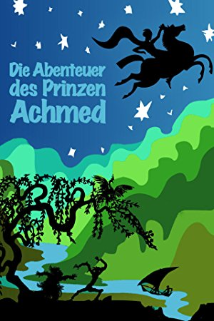
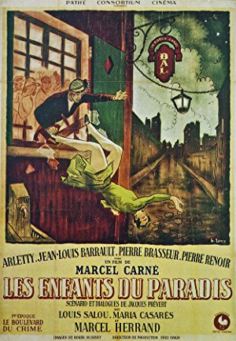
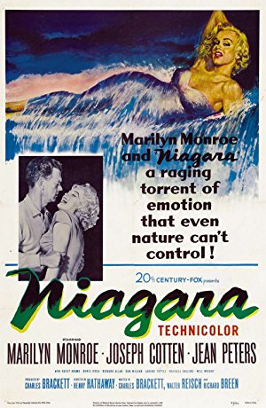
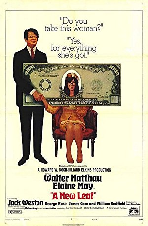
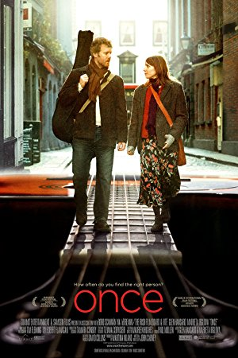
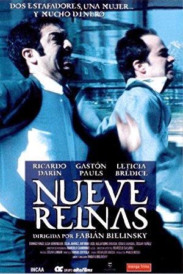
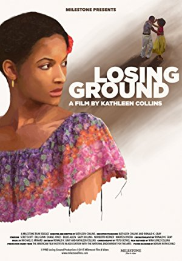
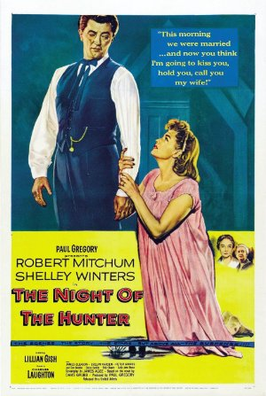

Season 53 (2018-2019)
The Cinema, Inc.'s 2018-19 season is completely SOLD OUT. To receive information about our 2019-20 season, please email your name and mailing address to us at thecinemainc@gmail.com, so that we can mail you a copy of the brochure for our 54th season. The new season starts September 2019.
 September 9, 2018
September 9, 2018
The Ox-Bow Incident
USA, 1943, 75 min, B&W, English, Not Rated
Directed by William A. Wellman; Starring Henry Fonda, Dana Andrews, Mary Beth Hughes, Anthony Quinn
 October 14, 2018
October 14, 2018
The Trouble with Harry
USA, 1955, 99 min, B&W, English, PG
Directed by Alfred Hitchcock; Starring Edmund Gwenn, John Forsythe, Mildred Natwick, Mildred Dunnock
 November 11, 2018
November 11, 2018
Nora's Will (Cinco días sin Nora)
Mexico, 2008, 92 min, , Spanish w/subtitles, Not Rated
Directed by Mariana Chenillo; Starring Fernando Luján, Enrique Arreola, Ari Brickman, Juan Carlos Colombo
- 
December 9, 2018
The Adventures of Prince Achmed (Die Abenteuer des Prinzen Achmed)
Germany, 1926, 81 min, Animated, Silent w/intertitles, Not Rated
Directed by Lotte Reiniger, Carl Koch; Starring N/A
 showing with
showing with
The Mysterious Geographic Explorations of Jasper Morello
Australia, 2005, 26 min, , English, Not Rated
Directed by Anthony Lucas; Starring Joel Edgerton, Helmut Bakaitis, Tommy Dysart, Jude Beaumont
 January 13, 2019
January 13, 2019
The Magnificent Ambersons
USA, 1942, 88 min, B&W, English, Not Rated
Directed by Orson Welles, Fred Fleck, Robert Wise; Starring Joseph Cotten, Dolores Costello, Anne Baxter, Tim Holt
 February 10, 2019
February 10, 2019
The Bigamist
Italy/France, 1956, 110 min, B&W, Italian w/subtitles, Not Rated
Directed by Luciano Emmer; Starring Marcello Mastroianni, Franca Valeri, Giovanna Ralli, Marisa Merlini
 March 10, 2019
March 10, 2019
Raise the Red Lantern (Da hong deng long gao gao gua)
China/Hong Kong/Taiwan, 1991, 125 min, Color, Chinese w/subtitles, PG
Directed by Yimou Zhang; Starring Li Gong, Saifei He, Cuifen Cao, Jingwu Ma
Read Roger Ebert's review of Raise the Red Lantern at Great Movies.
 April 4, 2019
April 4, 2019
Ida
Poland/Denmark/France/UK, 2013, 82 min, , , PG-13
Directed by Pawel Pawlikowski; Starring Agata Kulesza, Agata Trzebuchowska, Dawid Ogrodnik, Jerzy Trela
 May 12, 2019
May 12, 2019
Wadjda
Saudi Arabia/Netherlands/Germany/Jordan/United Arab Emirates/USA, 2012, 98 min, , , PG
Directed by Haifaa Al-Mansour; Starring Reem Abdullah, Waad Mohammed, Abdullrahman Al Gohani, Ahd
-
June 9, 2019
Wanda
USA, 1970, 102 min, , English, Not Rated
Directed by Barbara Loden; Starring Barbara Loden, Michael Higgins, Dorothy Shupenes, Peter Shupenes
- 
July 14, 2019
Children of Paradise (Les Enfants du Paradis )
France, 1945, 189 min, B&W, French w/subtitles, Not Rated
Directed by Marcel Carné; Starring Arletty, Jean-Louis Barrault, Pierre Brasseur, Pierre Renoir
Read Roger Ebert's review of Children of Paradise at Great Movies.
 August 11, 2019
August 11, 2019
Mulholland Drive
France/USA, 2001, 147 min, Color, English, R
Directed by David Lynch; Starring Naomi Watts, Jeanne Bates, Dan Birnbaum, Laura Harring
Read Roger Ebert's review of Mulholland Drive at Great Movies.
- 
September 10, 2017
Niagara
USA, 1953, 92 min, Color, English, Not Rated
Directed by Henry Hathaway; Starring Marilyn Monroe, Joseph Cotten, Jean Peters, Max Showalter
Marilyn Monroe had been in previous films, but Niagara turned her into an instant icon. This film is a rare Technicolor noir that crosses honeymoon camp with murder and mental illness. Monroe plays the voluptuous Rose, the unhappily married wife of George Loomis, a PTSD-afflicted Korean war vet. They have come to Niagara Falls to rekindle their marriage, but the embers of love are barely warm. Checking into the cabin next door is the chipper salesman type, Ray Cutler, and his wife, Polly. A love quadrangle seems like the obvious direction, but it takes a different turn when Polly spots Rose with another man and George suddenly disappears. A murder conspiracy emerges out of the mist.  October 8, 2017
October 8, 2017
Oldboy (Oldeuboi)
South Korea, 2003, 120 min, Color, , R
Directed by Chan-wook Park; Starring Min-sik Choi, Ji-tae Yu, Hye-jeong Kang, Dae-han Ji
After being kidnapped and imprisoned for fifteen years, Oh Dae-su is released without explanation. He learns he must find his captor in five days, unravel the mystery and exact revenge. Rage and hate inflate Dae-su’s courage and strength, making him a fierce animal bristling with raw energy and power. Oldboy is essentially a character study depicting the way vengeance consumes lives and souls as the film goes from mystery to prophesy to oddity. With its relentless pacing, it becomes increasingly ugly and disturbing, but you can’t turn away. At the end, there are no loose ends to unravel. November 12, 2017
November 12, 2017
The Spirit of the Beehive (El espíritu de la colmena)
Spain, 1973, 95 min, Color, Spanish w/subtitles, Not Rated
Directed by Víctor Erice; Starring Fernando Fernán Gómez, Teresa Gimpera, Ana Torrent, Isabel Tellería
On the Castilian Plains in 1940, a group of children mob the local distribution truck as it delivers the latest film, Frankenstein. One scene in the movie shows a young girl killed by the monster. Ana, a young village girl, is mesmerized and questions her older sister Isabela for answers about the child’s death. Much of the film is spent with Ana trying to understand death and fascinated with the idea that Frankenstein lives on as a spirit. Ana soon heads off to a nearby mountainside to seek out the mystery of death and find that spirit. This film is not only about death, but how important arts can be to the development of a child. An epiphany can take place at any time…in front of a movie screen or in a classroom.
Film Notes: It’s no wonder that the Spirit of the Beehive has received accolades as one of the best Spanish films ever made. It wields equal power as a work of cinematic art on the psychological, the political and the aesthetic level. Although our main protagonist is a six-year old girl and much of the film’s complex narrative is presented from her point of view, we ultimately gain some very adult insights on both the emotional ironies and political absurdities of the story. It’s this magical layering of perspectives that creates a quasi-spiritual experience by the end of the film. Young Ana lives in a Castilian village during and shortly after the Spanish Civil War. While there are many things in her world that she cannot understand yet, she is a highly impressionable child. When the film Frankenstein is shown in the village hall one evening, she is deeply affected by the images and the story, in particular the scene where the monster encounters and accidentally kills the little girl in the film. Even though her mischievous and know-it-all older sister assures her that everything in the movies is “fake”, Ana can’t stop thinking about the monster and begins to merge her own experiences in the “real world” with the ideas derived from the movie. While we are mostly focused on Ana’s child-like perceptions, the director Victor Enrice also presents us with subtle suggestions that all is not well in her overall environment. Her parents seem alienated from each other. It appears that her mother, Teresa, has had an affair with younger man not unlike the Republican soldier who seeks shelter in the supposed “lair of the monster.” We witness Teresa writing letters of nostalgic longing early in the film. Her father, a somewhat disillusioned beekeeper and a “patron” whose status in the village seems ambiguous, teaches his daughters about the dangers of consuming poisonous mushrooms which becomes significant on both the literal and metaphoric level by the end of the film. Often when cultural shifts occur particularly towards a more repressive regime, artists tend to react by employing a more metaphor-laden language. The Spirit of the Beehive is certainly a good example of this. Although the film takes place in 1940’s Francoist Spain, we can take some of its lessons to heart in contemporary America, even if we just begin by thinking about the endangerment of our very own bee population. Sometimes children see far more than we give them credit for and perhaps by assuming a more innocent mind-set, the world can still find redemption. (AM)
Read Roger Ebert's review of The Spirit of the Beehive at Great Movies.- 
December 10, 2017
A New Leaf
USA, 1971, 102 min, Color, English, Not Rated
Directed by Elaine May; Starring Walter Matthau, Elaine May, Jack Weston, George Rose
Walter Matthau plays a rich man who knows more about spending money than making it. When he learns he is broke, he sets a scheme in motion to get rich again. His plan is to marry a rich woman who no one will miss, then bump her off. Of course things don’t always work according to plan. The rich woman who has been tagged is as smart and naïve as Matthau’s character is dim and cunning. She’s rather clumsy but also a sweet little thing. As details of her premarital life are gradually revealed, we begin to understand the myriad ways in which every individual in her life has taken advantage of her naivete and charity.  January 14, 2018
January 14, 2018
Murder on the Orient Express
UK, 1974, 128 min, Color, English, PG
Directed by Sidney Lumet; Starring Albert Finney, Lauren Bacall, Martin Balsam, Ingrid Bergman
Sidney Lumet’s adaptation of Agatha Christie’s celebrated mystery is a nostalgic throwback to the early days of Hollywood when all-star casts routinely graced the screen. However, it is Albert Finney who truly runs the show here as the determined (and occasionally obnoxious) Hercules Poirot. This is not a great whodunit mystery, but this is old fashioned entertainment where the movie stars are on view the entire show. Everyone gets a chance to chew the scenery, show off their beautiful young (or revered old) faces and deliver a dialogue zinger or two. Lauren Bacall has the sauciest lines; Ingrid Bergman plays a repressed Swedish missionary; Sean Connery is a British officer with secrets to hide…you get the idea!- 
February 11, 2018
Once
Ireland, 2007, 86 min, Color, English, R
Directed by John Carney; Starring Glen Hansard, Markéta Irglová, Hugh Walsh, Gerard Hendrick
Once is a musical more concerned with music than costumes, and a love story more interested in love than sex. Unfolding on the streets of Dublin, the movie follows the fortunes of two people for whom prosperity is only a dream. Nope, they do not have names. Guy, the male lead, is a busker who sings songs on the nighttime streets. Girl, an immigrant Czech maid who relinquished a career as a concert pianist, sells roses on the same sidewalks to help support her mother and daughter. A music store owner allows her to play his pianos. When she takes Guy with her, they discover a powerful musical bond. The film’s music is at once ethereal and shattering but also its point. When you watch the film you will expect one outcome. Listen to it and you’ll hear quite another. - 
March 11, 2018
Nine Queens (Nueve reinas)
Argentina, 2000, 114 min, Color, Spanish w/subtitles, R
Directed by Fabián Bielinsky; Starring Ricardo Darín, Gastón Pauls, Leticia Brédice, María Mercedes Villagra
Nine Queens is a first-class heist movie. Juan is a struggling swindler, stuck cheating convenience stores out of unimpressive amounts of cash. He catches the eye of Marcos, a professional con artist, who coincidentally is in need of a new partner. The two spend a day getting acquainted, demonstrating various small-time cons for each other. They come across a potentially lucrative deal involving a set of forged stamps known as the Nine Queens. It is quite entertaining to watch these guys as they set up an extremely elaborate heist regarding the forged stamps. If you are a viewer who is hard to trick, you’ll enjoy trying to figure out the con. It’s fun to be fooled. - 
April 8, 2018
Losing Ground
USA, 1982, 86 min, Color, English, Not Rated
Directed by Kathleen Collins; Starring Seret Scott, Bill Gunn, Duane Jones, Billie Allen
Sara Rogers has reached a crossroads in her life. She’s a professional African-American woman, but the film isn’t defined by race or sex. Sara is a professor at CCNY. She teaches a course on existentialism, but also pursues a project on “ecstasy,” even though confessing that she doesn’t know what it means to be transported outside herself. Sara’s husband, Victor, is her temperamental opposite: ebullient, effusive, outgoing. New horizons appear for Sara when she is asked to star in a student film. Cast in the role of a deceived lover who shoots her partner in a jealous rage, she finds her own emotions transformed.  May 13, 2018
May 13, 2018
The Palm Beach Story
USA, 1942, 88 min, Color, English, Not Rated
Directed by Preston Sturges; Starring Claudette Colbert, Joel McCrea, Mary Astor, Rudy Vallee
Gerry (Claudette Colbert) and Tom (Joel McCrea) have been married for years and are very much in love, but their marriage is falling apart because of financial problems. Gerry finally decides that it’s best to get a divorce in Palm Beach and start fresh. The film is full of witty dialogue, outstanding one-liners, razor-sharp satire, fantastic characterizations and a great sense of humor. The magic that makes Sturges’ films so entertaining is that they transport the audience to a different place where good things happen to good people and at the end true love always wins. June 10, 2018
June 10, 2018
McCabe & Mrs. Miller
USA, 1971, 120 min, Color, English, R
Directed by Robert Altman; Starring Warren Beatty, Julie Christie, Rene Auberjonois, William Devane
The film is brilliantly awkward…or, refreshingly authentic if one does not quite accept the glorious image of the American West the early Westerns portrayed. It’s set in a small mining town, a place looking for identity and a leader. The gambling gunslinger, John McCabe (Warren Beatty), believes he can give the town what it needs: a brand new brothel. McCabe runs the brothel as he wants until the classy whore Constance Miller (Julie Christie) arrives and offers him a deal he is forced to consider. Along comes a big mining company wanting to buy him out, but he reluctantly vows to defend his ground.
Read Roger Ebert's review of McCabe & Mrs. Miller at Great Movies. July 8, 2018
July 8, 2018
Man with a Movie Camera (Chelovek s kino-apparatom)
Soviet Union, 1929, 68 min, B&W, Silent w/intertitles, Not Rated
Directed by Dziga Vertov; Starring Mikhail Kaufman
This silent film demonstrates the director’s insistence on skyrocketing the medium away from the theatrical and into a specific cinematic style that makes more use of camera technology. There is no distinctive plot or scenario to this film, no titles, actors or sets. What is to be witnessed is "real". Shot in several Russian cities, this hypnotic gem of a film has two goals in mind: to capture the day-to-day activities of the people and to demonstrate a vast array of camera techniques. The film consists of 1,775 separate shots whose average length is 2.3 seconds…a little like watching life on fast-forward. The audience is challenged to put together these events optically and emotionally to go beyond the common playacting of the time.
Read Roger Ebert's review of Man with a Movie Camera at Great Movies.- 
August 12, 2018
The Night of the Hunter
USA, 1955, 92 min, B&W, English, Not Rated
Directed by Charles Laughton; Starring Robert Mitchum, Shelley Winters, Lillian Gish, James Gleason
Directed by Charles Laughton; Starring Robert Mitchum, Shelley Winters, Lillian Gish, James Gleason.
This film is a nightmarish journey through a surreal landscape. Director Charles Laughton establishes a complex mood, toned by contrasts of innocence and evil, humor and menace, spirituality and hypocrisy. Robert Mitchum poses as a preacher, who cozies up to rich women, kills them and runs off with their fortunes. He hears about a stash of stolen money from a guy in jail and hunts down the guy’s wife and two kids to find it. The kids are quick to see through him. A disturbing sense of foreboding grows as he ingratiates himself with the woman and the townsfolk. The final sequence illustrates the clash of conflicting spiritual principles.
Read Roger Ebert's review of The Night of the Hunter at Great Movies. -
September 11, 2016
High Noon - Members' Choice!
USA, 1952, 85 min, B&W, English, PG
Directed by Fred Zinnemann; Starring Gary Cooper, Grace Kelly, Thomas Mitchell
This is the Citizen Kane of Western cinema. It is, simply put, a masterpiece. The acting, the music, the set, the dialogue, the camera work are all perfection. The film is a clear display of how the strong swallowed the weak in small, dirty, western towns where people would panic at the sight of armed bandits. This is the story of a man who would not run away - a man who left his beautiful bride alone - so he can confront four dangerous criminals who had a bone to pick with him. We follow Marshal Will Kane as he searches for men willing to help him fight for his life. It's all very unpredictable.  October 9, 2016
October 9, 2016
The Vanishing (Spoorlos)
Netherlands/France/West Germany, 1988, 107 min, Color, , Not Rated
Directed by George Sluizer; Starring Bernard-Pierre Donnadieu, Gene Bervoets, Johanna ter Steege, Gwen Eckhaus
When Saskia and Rex, a young Dutch couple, stop at a gas station in France, Saskia goes to the store to buy some drinks. She never returns; she seemingly just disappears. For three years, Rex pursues an extensive search for her. In an unusual deviation early in the film, the likely perpetrator is revealed and time is devoted to examining the stranger's eerily normal family life. At the conclusion of this extraordinary, gripping film, Rex will reach the bottom of the mystery. What he finds will stay with you for a long time. November 13, 2016
November 13, 2016
All That Jazz
USA, 1979, 123 min, Color, English, R
Directed by Bob Fosse; Starring Roy Scheider, Jessica Lange, Leland Palmer, Ann Reinking
His name is Joe Gideon and he is a movie director and Broadway choreographer. He is successful, wealthy, admired, and feared. He is also an unapologetic cheater who is addicted to amphetamines. He is struggling with a creative block, hates his own work and it's eating him alive. He finally creates a bold new concept for an upcoming show. Shortly after, he collapses and is told that he will die unless he changes his lifestyle. This is a brutally honest movie showing how spectacular and utterly ridiculous life on Broadway can be. Joe's story is essentially Bob Fosse's life story told via a series of magnificently choreographed pieces that rightfully place the movie among the greatest musicals ever filmed. December 11, 2016
December 11, 2016
Rififi
France, 1955, 118 min, B&W, French w/subtitles, Not Rated
Directed by Jules Dassin; Starring Jean Servais, Carl Möhner, Robert Manuel, Janine Darcey
Most modern films see the execution of the heist itself as the climax. However, in this film the theft serves as a gateway into the study of both masculinity and the unwritten codes that bind men together. A team of four skilled thieves assemble to pull off a crime that is seemingly impossible and risk everything on a plan that requires utmost precision. The characters are always acutely aware of every detail of their surroundings. This methodical approach allows the tension to build until the actual heist which is presented without dialogue. While the men might be skilled thieves, the film suggests that they are ultimately boys playing a dangerous game that is above their heads. January 15, 2017
January 15, 2017
The Cook, the Thief, His Wife & Her Lover
Netherlands/UK/France, 1989, 124 min, Color, English, NC-17
Directed by Peter Greenaway; Starring Richard Bohringer, Michael Gambon, Helen Mirren, Alan Howard
On one level you can describe this movie simply in terms of the characters and the lustful and unspeakable things they do to one another. On another level it is a wildly exuberant, bitingly satirical examination of excess, bad taste, and the most basic strengths and weaknesses of the human body. Dark humor and irony pepper nearly every scene. Most of the film takes place inside a fine French restaurant where the chef cares deeply for both the artistry and taste of the food. The restaurant's owner visits nightly to spout absurd discourses on every subject. The acting is superb in this gorgeous, visually rich film that tells the story of a fascinating hedonistic world.-
February 12, 2017
To Have and Have Not
USA, 1944, 100 min, B&W, English, Not Rated
Directed by Howard Hawks; Starring Humphrey Bogart, Walter Brennan, Lauren Bacall
An American running a fishing charter in the Caribbean romances a young lounge singer and reluctantly becomes involved with the French Resistance by agreeing to secretly transport a de Gaulle lieutenant. Based on Hemingway's novel, the story is sleepy and resembles Casablanca. However, the film is largely of note due to the debut of Lauren Bacall and the beginning of her relationship with Bogart. The two sizzle on the screen. Even though we're trained to look at the romance as the central relationship in a movie, it's Harry's (Bogart) caretaking of his first mate Eddie (Brennan) that serves as the film's real message. It's the sticking by the Eddies of the world, even though they cause nothing but trouble, that define a man's character and suggest he does the right thing.  March 12, 2017
March 12, 2017
Flesh and the Devil
USA, 1926, 112 min, B&W, Silent w/intertitles, Not Rated
Directed by Clarence Brown; Starring John Gilbert, Greta Garbo, Lars Hanson
This is the movie that made Greta Garbo a legend. She glows on the screen and never looked more beautiful. The story is a love triangle between two best friends and a wanton woman. Set in Austria before the first World War, Leo and Ulrich are soldiers and best friends from childhood. Ulrich's sister, Hertha, is in love with Leo. Felicitas (Garbo) plays a completely wicked woman. She seduces Leo but neglects to tell him she's married. Her husband catches them and demands satisfaction in a duel. Leo kills him and is advised to leave the country. When Leo returns years later, he learns that his best friend has married Felicitas. This woman has no shame. You can probably guess where the story goes from here so no more will be said. April 9, 2017
April 9, 2017
Sophie Scholl: The Final Days (Sophie Scholl: Die letzten Tage)
Germany, 2005, 120 min, , German w/subtitles, Not Rated
Directed by Marc Rothemund; Starring Julia Jentsch, Alexander Held, Fabian Hinrichs, Johanna Gastdorf
On February 10, 1943, Sophia Scholl and her brother Hans, students at Munich University and part of an underground resistance movement, were arrested for distributing anti-Nazi propaganda on campus. This film uses transcripts and testimonials to recreate those events centered on Sophie's interrogation. A large chunk of the film is devoted to Sophie's questioning by an austere Nazi official over several hours. Filmed like a tennis match it rhythmically builds to crescendos and then calms down creating suspense and intrigue. This movie puts human faces on the casualties of war and reminds us of mistakes we must never make again. May 14, 2017
May 14, 2017
Volver
Spain, 2006, 121 min, , Spanish w/subtitles, R
Directed by Pedro Almodóvar; Starring Penélope Cruz, Carmen Maura, Lola Dueñas, Blanca Portillo
This is a ghost story that includes lust, incest, rape, and murder. The opening scene is set at a cemetery where Raimunda (Cruz) and her sister Sola (Dueñas) are cleaning the gravestone of their parents who died in a fire. Or did they? For starters, the sisters have an aunt who claims their mom, Irene, has returned from the dead to take care of her. Sola passes off Irene as a Russian and puts her to work in an illegal beauty salon. When Raimunda's teen daughter Paula claims to have stabbed Raimunda's husband when he tried to rape her, Raimunda hides the body in a freezer. Now add a new twist: a neighbor who's dying of cancer. Got that? No matter. Plot is merely Almodovar's way into the souls of his women. June 11, 2017
June 11, 2017
The Station Agent
USA, 2003, 89 min, Color, English, R
Directed by Tom McCarthy; Starring Peter Dinklage, Paul Benjamin, Jase Blankfort, Paula Garcés
Directed by Tom McCarthy, starring Peter Dinklage, Patricia Clarkson, Bobby Cannavale
When Finn (Peter Dinklage) inherits an old abandoned train station from the man who was his only friend, he moves there to live a life of solitude, inasmuch as his whole life he's had to deal with dwarfism and being treated as an outcast. Only he doesn't find solitude there, instead he meets a chatty hotdog vendor and a troubled woman. An unlikely friendship develops as the three simply deal with life and the complications life brings. What makes this movie genius is that it's so natural and realistic. Peter Dinklage is the glue that holds the pieces of the story together. His subtle expressions set the tone of the movie, moving us to laugh or feel sad.-
July 9, 2017
The Mirror (Zerkalo)
Soviet Union, 1975, 107 min, B&W, Russian w/subtitles, G
Directed by Andrei Tarkovsky; Starring Margarita Terekhova, Oleg Yankovskiy, Filipp Yankovskiy, Ignat Daniltsev
Directed by Andrei Tarkovsky, starring Margarita Terekhova, Filipp Yankovskiy, Ignat Daniltsev
Mirror is indeed a film that can provide immense satisfaction to a patient, intelligent viewer interested in good cinema, art, classical Western music and Russian literature. This film is a very complex autobiographical film of Tarkovsky (director) reflecting on his memories, good and bad, from childhood to adult life. Mirror does not have a plot, it does not contain any violence or sex, and it does not follow chronologically. Tarkovsy elevated the film to a sublime state of reflection (hence the title) on the importance of family and spiritual life, encouraging the viewer to notice similar visual and aural elements that one might have experienced in one's own life.  August 13, 2017
August 13, 2017
Sweet Smell of Success
USA, 1957, 96 min, B&W, English, Not Rated
Directed by Alexander Mackendrick; Starring Burt Lancaster, Tony Curtis, Susan Harrison, Martin Milner
This film is about scratching (the "you scratch my back and I'll scratch yours" type), and two men without morals. One is a powerful newspaper columnist, who could create stars in minutes, and destroy them just as fast. The other man is a ambitious and manipulative press agent who both admires and fears the columnist. The plot is practically irrelevant. It is the unique dialogue, the one-liners and colorful expressions that fascinate, as well as the atmosphere of chic clubs, bars and influence of powerful politicians, corrupt cops and beautiful women. The movie is a master class in demagoguery and machinations.- September 13, 2015
Sunrise: A Song of Two Humans (Inaugural film shown by Cinema, Inc. 1965)
USA, 1927, 94 min, B&W, Silent w/intertitles, Not Rated
Directed by F.W. Murnau; Starring George O'Brien, Janet Gaynor, Margaret Livingston, Bodil Rosing  Sunrise comes with a subtitle A Song of Two Humans. Interestingly, the characters are not named. At the start, we meet The Woman From the City who takes a vacation at the seashore. She has an affair with The Man who's married to The Wife with whom he is embroiled in marital problems. The Man is tormented by his infidelity but continues his tawdry affair. The Woman encourages The Man to kill The Wife. He gets cold feet and frightens The Wife who runs scared to The City. He chases her to The City where they reunite, culminating in events that settle who The Man ends up with.
Sunrise comes with a subtitle A Song of Two Humans. Interestingly, the characters are not named. At the start, we meet The Woman From the City who takes a vacation at the seashore. She has an affair with The Man who's married to The Wife with whom he is embroiled in marital problems. The Man is tormented by his infidelity but continues his tawdry affair. The Woman encourages The Man to kill The Wife. He gets cold feet and frightens The Wife who runs scared to The City. He chases her to The City where they reunite, culminating in events that settle who The Man ends up with.
** Read Roger Ebert's review of Sunrise: A Song of Two Humans at Great Movies.-
September 13, 2015
Sunrise: A Song of Two Humans (Inaugural film shown by Cinema, Inc. 1965)
USA, 1927, 94 min, B&W, Silent w/intertitles, Not Rated
Directed by F.W. Murnau; Starring George O'Brien, Janet Gaynor, Margaret Livingston, Bodil Rosing
Sunrise comes with a subtitle A Song of Two Humans. Interestingly, the characters are not named. At the start, we meet The Woman From the City who takes a vacation at the seashore. She has an affair with The Man who's married to The Wife with whom he is embroiled in marital problems. The Man is tormented by his infidelity but continues his tawdry affair. The Woman encourages The Man to kill The Wife. He gets cold feet and frightens The Wife who runs scared to The City. He chases her to The City where they reunite, culminating in events that settle who The Man ends up with.  October 11, 2015
October 11, 2015
King of Hearts (Le Roi de Coeur)
France/Italy, 1966, 102 min, Color, , Not Rated
Directed by Philippe de Broca; Starring Pierre Brasseur, Jean-Claude Brialy, Geneviève Bujold, Adolfo Celi
Set during WWI, the occupying Germans retreat from the town of Marville, France, but not before leaving behind a time bomb. The fleeing townspeople tell the approaching British forces about the hidden explosive. Pvt. Charles Plumpick, a poetry-loving Scotsman, is dispatched to locate the bomb. To avoid the German rear guard, Plumpick ducks into Marville's insane asylum. While trying to defuse the bomb he falls in love with one of the lovely inmates, Coquelicot. The inmates hail him as the King of Hearts before retaking the town and resuming their former lives in a decidedly loony fashion. Those willing to open themselves to a lighthearted treatment of this all-too-serious subject will find it touching and life-affirming. November 8, 2015
November 8, 2015
La Strada
Italy, 1954, 108 min, B&W, Italian w/subtitles, Not Rated
Directed by Federico Fellini; Starring Anthony Quinn, Giulietta Masina, Richard Basehart, Aldo Silvani
This is one of Fellini's best works. The film centers on two itinerant circus performers on the road. Zampano, the gypsy, a traveling strong-man, "buys" Gelsomina, a simple-minded but pure of heart young woman from her destitute mother and makes her his assistant to the act. However, his abuse of her causes great suffering. Eventually the pair join a tiny circus where she meets Il Matto, a clown and high-wire artist, who treats Gelsomina kindly. When Matto is accidentally killed she is devastated and suffers an emotional breakdown and Zampano abandons her. Years later he realizes his need for her. December 13, 2015
December 13, 2015
Babette's Feast (Babettes gæstebud)
Denmark, 1987, 102 min, Color, Danish w/subtitles, G
Directed by Gabriel Axel; Starring Stéphane Audran, Bodil Kjer, Birgitte Federspiel, Jarl Kulle
Two aging sisters, the leaders of a small Danish sect, have devoted their lives to religion, never venturing from their town of birth. Babette, a cook from Paris has been hired to work for the sisters. Babette invites the sisters and a few other townsfolk to share in a feast to celebrate their beloved, late pastor, and ends up performing an amazing act of grace and selflessness. Babette is a maestro. The kitchen is her orchestra. The sisters and the church members agree to eat the food, but not to enjoy or praise it. And then the miracle occurs, when these stern old puritans are transformed by the baba aurhum and the champagne (which is mistaken for lemonade). January 10, 2016
January 10, 2016
Five Easy Pieces
USA, 1970, 98 min, Color, English, R
Directed by Bob Rafelson; Starring Jack Nicholson, Karen Black, Billy Green Bush, Fannie Flagg
This is a moody, incisive, thoughtful character study of an alienated, misfit drifter and non-committal drop-out. It's a road trip about a man who had turned his back on his well-to-do upbringing and his musical talent, leading him into a period of self imposed exile, discontent, and emotional emptiness. In a major turning point in the film, this misbehaving red-neck returns to his estranged family's home in Puget Sound for a final reconciling visit. There he finds love with the sophisticated, musical protegé and fiancée of his brother. However, he quickly returns to his discontent and is back on the road again with his dim-witted girlfriend. February 14, 2016
February 14, 2016
Top Hat
USA, 1935, 101 min, B&W, English, Not Rated
Directed by Mark Sandrich; Starring Fred Astaire, Ginger Rogers, Edward Everett Horton, Erik Rhodes
While the plot is somewhat thin, the comic mix-ups, great songs, and marvelous dance numbers more than make up for it. Astaire plays Jerry Travers, a song-and-dance man brought to London by a big-time impresario, Horace (Edward Everett Horton), to star in one of his shows. Jerry meets Dale Tremont (Rogers), a young fashion model, on his first night in town and instantly falls in love with her. Trouble develops when Dale mistakenly assumes that Jerry is Horace, a married man. As Jerry is doing his best to pursue Dale, Dale is doing her best to avoid a guy she thinks is a cad. This mistaken identity gambit provides a relaxed, unpretentious mood where the stars and the music and the dancing are all that matter. March 13, 2016
March 13, 2016
Women on the Verge of a Nervous Breakdown
Spain, 1988, 88 min, Color, Spanish w/subtitles, R
Directed by Pedro Almodóvar; Starring Carmen Maura, Antonio Banderas, Julieta Serrano, María Barranco
This is a funny, energetic, and sexy comedy by a filmmaker who intuitively understands women. In this picture, the women are a mix of strength and vulnerability, of passion and neurosis. Pepa is an actress who learns that her longtime married lover Ivan is breaking up with her. The problem is, she's pregnant and her failed attempts to contact Ivan don't help her state of mind. Complexity grows with the arrival of her hysterical friend Candela who may have caused an international incident by sleeping with a renowned terrorist. In the meantime, Ivan's ex-wife is seeking revenge on Pepa. There is also a cab driver who provides a drug store on wheels, a burning bed, and a pitcher of gazpacho laced with barbiturates. This is a zany comedy with a touch of sex appeal. April 10, 2016
April 10, 2016
The Seventh Seal
Sweden, 1957, 96 min, B&W, Swedish w/subtitles, Not Rated
Directed by Ingmar Bergman; Starring Gunnar Björnstrand, Bengt Ekerot, Nils Poppe, Max von Sydow
The film is an exploration of life, death, and the existence of God. Set in medieval times, it follows a depressed knight called Antonius Block (von Sydow) and his squire who return from the Crusades to find the land ravaged by the Black Death. After Death shows up to claim Block, Block challenges Death to a game of chess to play for his fate, so he might have time to come to terms with the world. The game takes place at various intervals during the knight's journey home, during which he encounters different characters, always with the threat of doom lurking in the shadows.-
May 8, 2016
Dr. Strangelove (Audience choice selection)
USA/UK, 1964, 95 min, B&W, English, PG
Directed by Stanley Kubrick; Starring Peter Sellers, George C. Scott, Sterling Hayden, Keenan Wynn
Commanding a wing of the Strategic Air Command, a looney general orders B-52 bombers to attack the Soviet Union. When a military attaché tries to stop him, the general defends his act based on the Commie plot to "taint our water and deplete our precious bodily fluids". He refuses to reveal the code which can recall the bombers. The President learns that the Russians have a doomsday machine set to launch at the US if they're bombed. While this dark comedy of errors has a serious theme, Kubrick manages to inject wicked humor into it, including lots of sexual innuendos. -
June 12, 2016
To Kill a Mockingbird
USA, 1962, 129 min, B&W, English, Not Rated
Directed by Robert Mulligan; Starring Gregory Peck, John Megna, Frank Overton, Rosemary Murphy
This film nails the essence of childhood, a recreation of the fears, attitudes and preoccupations of kids. Essentially the film is just a string of events that share the underlying theme of prejudice. The children's irrational fear about Boo Radley, whom they've never seen, and the townsfolk's racial intolerance are separate events, but they are about the same thing. Scout, the daughter of Atticus (Gregory Peck), is the movie's narrator and that's perfect because the story works well from a child's perspective. The film doesn't take an easy road. It confronts tough issues along the way and doesn't flinch from unpleasant outcomes.  July 10, 2016
July 10, 2016
Rashomon
Japan, 1950, 88 min, B&W, Japanese w/subtitles, Not Rated
Directed by Akira Kurosawa; Starring Toshirô Mifune, Machiko Kyô, Masayuki Mori, Takashi Shimura
This tells the story of the rape of a woman and the murder of a man, presented entirely in flashbacks from the perspectives of four narrators. At the Rashomon gate at Kyoto, several people who witnessed the incident take shelter and discuss the crime. A woodcutter claims to have stumbled upon the scene first. A priest recalls seeing a man and a woman traveling through the woods. A bandit confesses to raping the woman and killing the man. A woman adds more confusion by confessing to the murder. Rashomon isn't about determining a chronology of the event, nor about culpability or innocence. It focuses on how perspective distorts reality and hides the truth. August 14, 2016
August 14, 2016
Some Like It Hot
USA, 1959, 121 min, Color, English, Not Rated
Directed by Billy Wilder; Starring Marilyn Monroe, Tony Curtis, Jack Lemmon, George Raft
Set in Prohibition-era Chicago,the film stars Tony Curtis and Jack Lemmon as Joe and Jerry, two jazz musicians who encounter perpetual economic troubles. They land a gig at a speakeasy but lose it when the cops raid the joint. After that, they witness the killing of the informant who ratted on the crime boss "Spats" Colombo (George Raft), so they have to go on the lam. They don women's garb, transforming themselves into "Josephine" and "Daphne" to join an all-girl band for a gig in Florida. Inevitably the crooks catch up with them but not before they run into other crazy and funny complications.- September 14, 2014
City Lights
USA 1931, B&W, Unrated, 87 min
Directed by Charles Chaplin, starring Charles Chaplin, Virginia Cherill, Florence Lee
When Chaplin made this picture, although three years into the era of sound, he must have known that "City Lights" might be his last silent film. Although the film has a full musical score (composed by Chaplin) and sound effects, it has no speech. This film would come the closest to representing all the different levels of his genius. It contains the pathos, the pantomime, the effortless physical coordination, the melodrama, the bawdiness, the grace, and, of course, the Little Tramp, a character to become the most famous image on earth, as he struggles to help a blind flower girl with whom he has fallen in love. - October 12, 2014
The Imaginarium of Dr. Parnassus
UK 2010, Color, Rated PG-13, 125 min
Directed by Terry Gilliam, starring Christopher Plummer, Lily Cole, Heath Leger
Dr. Parnassus runs a sort of circus troupe with his daughter Valentina and two other compatriots. Their shtick is the hawking of the Imaginarium which supposedly allows those who enter to live out their dream life. Their scheme is not going well and they have money problems. Parnassus makes a bet with the devil who predicts Parnassus would find a man who would be their savior. Their new teammate is adroit at attracting customers and changes Parnassus' life. This is a wonderful fantasy drawn from pure imagination. - November 9, 2014
The Firemen's Ball
Czechoslovakia 1968, Color, Unrated, 71 min
Directed by Milos Forman, starring Jan Vostrcil, Josef Sebánek, Josef Valnoha
This is the story of a single night at a small-town party organized by the local fire brigade to honor their retiring chairman on his eighty-sixth birthday (they missed honoring him on the more meaningful eighty-fifth, in the first of many fumbles by this incompetent assemblage). From the very beginning Forman sets the scene for the idiocy to come. The firemen accuse each other of stealing the prizes from the night's lottery fund, and set fire to the banner that was to hang above the hall during the ball. The fact that they're unable to put out even a small blaze shows their bungling and sets up the film's surprising poignant climax in this deadpan, hilarious satire. - December 14, 2014
The Phantom Carriage
Sweden 1922, B&W, Unrated, 93 min
Directed by Victor Sjöström, starring Victor Sjőstrőm, Hilda Borgstrőm, Tore Svennberg
This is a horror film in the sense that it wallows in the misery of despair of not only the protagonist's life (Holm) but also of those whose lives he scuttled on his way down. Holm is subjected to a dark, frigid excursion that gives forlorn faces to his sins. He spends his last moments on earth in a graveyard with his drinking buddies, where he relays a folk tale that insists that the last person to die each year is doomed to drive death's carriage for the next twelve months and become a reaper of souls. He is one of the biggest, most unrepentant bastards you'll ever meet. (Note: Director Sjoström, the father of Swedish cinema, inspired Ingmar Bergman to become a film director.) - January 11, 2015
This Is Spinal Tap
USA 1984, Color, Rated R, 82 min
Directed by Rob Reiner, starring Rob Reiner, Michael McKean, Christopher Guest
In his directorial debut, Reiner takes the "rockumentary" platform to a whole different level. The film follows the imaginary British rock band Spinal Tap on their brand new American tour. Though the actors play it straight, the effect is pure, unadulterated hilarity, as they go through one absurd situation after another on the road to obscurity. You might think these actors are faking, but you'll be surprised to see them singing and playing. - February 8, 2015
Beauty and the Beast (La Belle et la Bete)
France 1946, B&W, Unrated, 93 min
Directed by Jean Cocteau, René Clément, starrying Jean Marais, Joette Day, Mila Parély
Disney it ain't, but it is by far the best adaptation of the well-known fairy tale. The movie tells the tale of a girl who wishes for greater things while growing up in a quiet French town. When her father gets off course on his travels to find riches, he wanders into a castle under an enchanted spell and becomes the owner's prisoner. Of course, the loyal daughter offers herself in exchange and ends up under scrutiny since if the Beast can get her to fall in love with him, he can break the spell. The magical castle is crammed full with mysterious living statues and hands holding candelabras and pouring wine. There is little that digital graphics could do to make this film more fanciful. It is far more memorable than anything created by the Disney folks. - March 8, 2015
The Wrong Box
UK 1966, Color, Unrated, 105 min
Directed by Bryan Forbes, starring John Mills, Michael Caine, Ralph Richardson
A tontine, or investment pool, is drawn up on behalf of several young British boys for their benefit. The resultant fortune will go to the last surviving member of the tontine. A series of montages depicts the various demises of the heirs. Finally only two brothers are left and one, also standing to benefit, attempts to kill the other with each attempt failing spectacularly. Standing to benefit from the tontine are the son and nephews of the brothers who get involved in the crime. The farcical complications fly thick and fast in this wacky gigglefest. - April 12, 2015
In The Mood for Love
Hong Kong 2000, Color, Rated PG, 98 min, subtitled
Directed by Kar Wai Wong, starring Tony Chiu Wai Leung, Maggie Cheung
Hong Kong, 1962. Two people move into rented rooms in adjoining apartments on the same day. The lives of Mrs. Chan and a journalist Mr. Chow are about to cross paths as their respective, and possibly cheating, spouses fade into the background. We literally never see their faces. A rapport develops between this lonely pair, bypassing one another on the stairs and the tight hallways. A certain intimacy becomes almost inevitable. Each is trapped in a deeply unsatisfying marriage. They seem to act upon a naturally evolving attraction. But do they ever consummate their love? - May 10, 2015
Akira Kurosawa's Dreams
Japan 1990, Color, Rated PG, 119 min, subtitled
Directed by Akira Kurosawa, starring Akira Terao, Mitsuko Baishô, Toshie Negishi
Akira Kurosawa's Dreams is a most unusual film – it's a collection of eight dream sequences by one of the greatest film visionaries that ever lived. The director claimed that these sequences were actually dreams that he previously experienced over the years. He then turned them into a poetic screenplay that doesn't really run so much as a story as it does as a hauntingly beautiful interweaving of shapes and images. It requires some strong focus to find the macrobiotic structure within the film, but the more you watch, the more you understand...and the more the film speaks to you. - June 14, 2015
The Americanization of Emily
USA 1964, B&W, Rated G, 115 min
Directed by Arthur Hiller, starring James Garner, Julie Andrews, Melvyn Douglas
This is essentially an anti-war comedy drama. Commander Charlie Madison, an American officer stationed in England during World War II, has purposely managed to keep himself out of the conflict and behind the scenes in the service of an admiral who believes a naval officer should be the first to land at the D-Day beaches. Charlie sees this as a suicide mission. The film is a mixture of genres, blending and lampooning 1940s romance films through comedy, as well as presenting a harsh critique on the glorification of war and US heroism. - July 12, 2015
The Man in the White Suit
UK 1951, Color, Rated G, 85 min
Directed by Alexander Mackendrick, starring Alec Guiness, Joan Greenwood, Cecil Parker
A fun, farcical comedy with surprising depth. The movie centers on an eccentric man working in a textile mill who has found a formula to create a fabric which never wears out or gets dirty. While that sounds wonderful, on a wider scale it makes you think about businesses trying to stifle progress to protect profits and workers fearing for their jobs. We not only see him running around in a luminous white suit but various people try to prevent him from getting away and revealing his invention. Wonderfully paced and acted, it will keep you smiling from start to finish. - August 9, 2015
Notorious
USA 1946, B&W, Rated G, 101 min
Directed by Alfred Hitchcock, starring Cary Grant, Ingrid Bergman, Claude Rains
Ingrid Bergman plays Alicia, the daughter of a German-American who betrayed the United States by providing financial aid to Germany during the war. She wants nothing to do with politics and is more interested in socializing and carousing. Cary Grant plays an agent for the US government and has the assignment to recruit Alicia as a spy. Her job will be to win her way into the confidence of German agents who might be attempting to restart the war. This is an excellent film noir piece. The excitement and tension comes exclusively from the dialogue and interaction between the characters. - 9/8/2013
Cool Hand Luke
Cool Hand Luke uses a seemingly simple and straightforward story to offer a lot of social commentary. In the post-World War II South, Luke Jackson, a decorated veteran, finds himself bored with life. After a minor act of defiance, he ends up on a chain gang for two years. He soon earns the name Cool Hand Luke for his stubbornness and audaciousness. The prison bosses begin a systematic campaign to break him. Viewed purely on a narrative level, it is nothing more than the story of one man's prison odyssey. Taken to a deeper level, it is a metaphor for the social climate in which it germinated. The bittersweet payoff is successfully orchestrated. - 10/13/2013
House
Horror films seem to be in a constant state of evolution. There's always a new twist on an old plot. The bare bones of the plot of Housesound familiar: a group of teenage girls trapped in a creepy old mansion are being murdered one by one. However, in the hands of a first-time director with a background in art and advertising, it becomes a chaotic and experimental piece of work. Angel, a Japanese schoolgirl and only child, finds out that her widowed father wants to bring his glamorous new girlfriend on their summer vacation. Furious, she decides to take a few classmates to her aunt's mansion in the country. Will the survivors discover the terrifying secret behind the house before it's too late? - 11/10/2013
Of Gods and Men
In 1966 Algeria, eight Trappist monks are taken hostage by terrorists. The Algerian government had urged the monks to leave. The monks could easily have avoided this fate, but instead chose to maintain their quiet routines: to pray and sing in a little chapel, tend crops, sell honey, treat the sick, and hold community meetings. They live peacefully in a Muslim community. There is deep serenity in their way of life. The film doesn't raise political questions. It focuses on the nobility of the monks in choosing to stay with their vocation and duty in the face of quite probably death. Did they make the right choice? - 12/8/2013
Exit Through The Gift Shop
A Los Angeles-based Frenchman, Thierry Guetta, wants to film street artists in the process of creating their work. He tells them he is making a documentary, when in reality he has no intention of editing the footage into one cohesive movie. Unaware of this, many street artists from around the world agree to participate. One of the artists is the camera-shy Brit, Banksy, who refuses to be shown on screen unless he is blacked out. Banksy convinces Thierry to use the footage to make a movie, but then decides to make his own film about the project. - 1/12/2014
Frozen River
The film takes place in the days before Christmas near a little-known border crossing on the Mohawk reservation between New York and Quebec. The lure of fast money from smuggling presents a daily challenge to single mothers who would otherwise be earning minimum wage. Two women – one white, one Mohawk, both faced with desperate circumstances – are drawn into the world of smuggling aliens across the frozen St. Lawrence River. This is the story of two lives in economic emergency, of two women who are brace and resourceful, and the awesome, terrifying beauty in their journeys across the ice. - February 9
Picnic at Hanging Rock
On a drowsy Valentine's Day in 1900, a party of girls from a strict boarding school in Australia go on a day's outing to Hanging Rock, a geological outcropping not far from their school. Three of the girls and one of their teachers disappear into thin air. One of them is found a week or so later, but can remember almost nothing. Where are the others and will they be found? A film of haunting mystery and buried sexual hysteria, Picnic explores the chasm between settlers from Europe and the ancient mysteries of their new home. - 3/9/2014
Broken Embraces
In this compulsive psychological thriller, Penelope Cruz plays a woman loved and obsessed over, feared, and abused. It is a movie crammed with passion, plot twists, and lies. Every other character clutches a painful past or shameful secret. At the start of the film, the protagonist introduces himself as two people: a sighted film director and a blind screenwriter. How the carefree film director morphed into the disabled screenwriter is the crux of the story that leaps between two time periods and multiple layers of deception. - 4/13/2014
I've Loved You So Long
Thomas has specialized in playing women whose cool facade covers strong emotion. Here she's covering a volcano she can never completely hide. Initially Juliette is seen waiting to be picked up at the airport. We learn she has just been released after 15 years in prison. Her younger sister brings her home to stay with her family. Overall Juliette harbors the hopelessness of someone who knows she can never really be understood and fears she may never be part of the world again. She's in constant conflict. How she resolves the conflict is the essence of the film, along with the film's essential mystery: Why was Juliette imprisoned? - 5/11/2014
El Amor Brujo
Like the dance and emotions that inspired it, El Amor Brujo is unrepentantly and passionately theatrical. Skies are not just blue, but purple; sunsets glow vivid pink; bonfires rage blood red. Created by one of the leading visual stylists of dance on film, Carlos Saura, the film explores the gypsy origin of flamenco. Set in a dusty Andalusian village, it is a tale of a woman possessed by the ghost of her unfaithful husband and the man who loves her. - 6/8/2014
Brick
High school student Brendan finds the dead body of his one-time girlfriend Emily in a drainage ditch. From the mouth of the tunnel comes the sound of her murderer escaping. The victim called him earlier for help. Brendan turns into a classic 1930s gumshoe, tracing her movements back to a high school principal who tries to pull him off the case. True to the genre, the movie has tough and dippy dames, an eccentric crime kingpin, some would-be toughs, and an enigmatic know-it-all. It's a classic Hollywood film noir! - 7/13/2014
The Lives of Others
In 1984 East Berlin, an agent of the secret police, conducting surveillance on a writer and his lover, finds himself becoming increasingly absorbed in their lives. He sits in an attic day after day, night after night, spying on the people in the flat below. That angle in itself is unusual: a thriller that follows the villain. This film shows both the right ways and wrong ways to live. Most compelling, it puts a man who has lived his life in a desperately wrong way, as a tormenter of innocents and a government thug, listening to the conversations of a thoroughly decent man. - 8/10/2014
Saboteur
After a fire at a Los Angeles aircraft factory, Barry Kane is the number one suspect. Forced to go on the run to clear his name and find the man who is the real saboteur, he travels across the country to New York. Barry finds himself in the company of model Pat Martin who initially wants to turn him in, but slowly believes he is innocent, especially when they discover a fascist group is behind the factory fire and plans additional sabotage. The couple become entangled in a series of difficult situations, including catching a ride with quirky group of circus performers. - September 9, 2012
In the Loop
UK, 2009, Color, Not Rated, 106 Minutes.
Directed by Armando Iannucci. Starring Peter Capaldi, Tom Hollander, Mimi Kennedy.
In the Loop is a mordantly funny satire about the political maneuvering behind the run-up to elective war. Both the U.S. President and U.K. Prime Minister fancy the war. American diplomat Karen Clarke (Mimi Kennedy) and General Miller (James Gandolfini) do not; nor does British Secretary of State for International Development Simon Foster (Tom Hollander). But when Simon accidentally supports military action on TV, he suddenly has a lot of friends across the pond. If Simon can get into the right meeting, if his entourage of one can sleep with the right intern, if either can outwit the Prime Minister's volcanic spin-doctor, Malcolm Tucker (a sublime Peter Capaldi), they may be able to stop the war. - October 14, 2012
Let the Right One In
Sweden, 2008, Color, Rated R, 115 Minutes, Subtitled.
Directed by Thomas Alfredson. Starring Kåre Hedebrant, Lina Leandersson
Pre-adolescent angst has rarely been as eerie or unsettlingly honest as in this stylish, psychologically complex tale of friendship between a tormented schoolboy (Kåre Hedebrant) and his new neighbor (Lina Leandersson), a reclusive 12-year-old girl who isn't exactly what she seems. Adapted from the popular novel by author John Ajvide Lindqvist, Let the Right One In is the rare genre film that explores sophisticated issues and themes with an intensity that can be hard to achieve within the bounds of realism. The result is a thoughtfully plotted adult fable that builds quiet momentum toward a thrilling climax. - November 11, 2012
Airplane!
USA, 1980, Color, Rated PG, 88 Minutes.
Directed by Jim Abrahams, David Zucker, Jerry Zucker. Starring Robert Hayes, Julie Hagarty, Lloyd Bridges, Robert Stack, Ted Knight, Leslie Nielsen.
This spoof of the Airport disaster movies combined sight gags, deadpan dialogue and a cavalcade of clichés to form a broad comedic style that would dominate Hollywood for the next 20 years. Aerophobic former pilot Ted Striker (Robert Hays) boards a passenger jet to woo back his stewardess girlfriend (Julie Hagerty). When food poisoning overtakes the crew, Striker must land the plane, aided by a glue-sniffing air traffic controller (Lloyd Bridges) and Striker's former captain (Robert Stack). The trio of directors would go on to make Top Secret! and Ruthless People before launching successful solo careers. - December 9, 2012
Mon Oncle
France, 1958,Color, Not Rated, 117 Minutes. Subtitled.
Directed by Jacques Tati. Starring Jacques Tati, Jean-Pierre Zola, Adrienne Servantie.
Jacques Tati's beloved Monsieur Hulot is a bumbling innocent at sea in the vagaries of the modern world. Like Chaplin and Keaton before him, Tati uses his character's inherent mildness and some wonderfully choreographed slapstick comedy to underscore his commentary on humanity versus the changes of modern life. A film set along the dividing line between Paris' past and its future, Mon Oncle was awarded the Best Foreign-Language Film Oscar in 1958, as well as a Special Jury Prize at the Cannes Film Festival. - January 13, 2013
Winter's Bone
USA, 2010, Color, Rated R, 100 Minutes.
Directed by Debra Granik. Starring Jennifer Lawrence, John Hawkes.
Her family home in danger of being repossessed after her meth-cooking dad skips bail and disappears, Ozark teen Ree Dolly (Jennifer Lawrence) breaks the local code of conduct by confronting her kin about their conspiracy of silence. If she fails to track down her father, Ree, her younger siblings, and their disabled mother will soon be homeless. A thriller as bleak as its hardscrabble landscape, Winter's Bone earned Academy Award nominations for Best Picture, Best Adapted Screenplay, Best Actress (Lawrence) and Best Supporting Actor (John Hawkes). - February 10, 2013
The Discreet Charm of the Bourgeoisie
France/Italy/Spain, 1972, Color, Rated PG, 102 Minutes, Subtitled.
Directed by Luis Buñuel. Starring Fernando Rey, Delphine Seyrig, Paul Frankeur.
Winner of the Oscar for Best Foreign Film, Luis Buñuel's surrealist comedy skewers social conventions through the conceit of a dinner party that cannot be consummated. Interweaving flashbacks and dreams-within-dreams, Buñuel interrogates the absurdities of bourgeois ceremony and hypocrisy as two well-heeled couples and their friends are vexed by such obstructions as botched scheduling, sexual desire, a theater audience, an untimely funeral, and armed revolutionaries. Their inability to eat increasingly suggests a manifestation of their innermost fears, but the film resists such straightforward interpretations. - March 10, 2013
M
Germany, 1931, B&W, Not Rated, 99 Minutes. Subtitled.
Directed by Fritz Lang. Starring Peter Lorre.
Inspired by the Dusseldorf child murders, Fritz Lang's classic early talkie was a profound influence on Alfred Hitchcock and Orson Welles (among others) and a touchstone for 1940s American film noir. In 1931 Berlin, police are rounding up the city's criminals in their search for a child murderer. With the heat threatening their livelihood, underworld leaders decide to take matters into their own hands. Though filmed in Weimar Germany, the technically dazzling M solidified Lang's reputation with American audiences and made an international star out of Peter Lorre. - April 14, 2013
Throne of Blood
Japan, 1961, B&W, Not Rated, 110 Minutes. Subtitled.
Directed by Akira Kurosawa. Starring Toshirô Mifune, Akira Kubo, Isuzu Yamada.
Kurosawa does Macbeth in medieval Japan. After a military victory, Lords Washizu (Toshirô Mifune) and Miki (Akira Kubo) wander lost in the Cobweb Forest, where they meet a mysterious old woman who predicts great things for Washizu and greater things for Miki's descendants. Washizu and Miki are soon promoted by the Emperor. Goaded by his wife, the ambitious Lady Washizu (Isuzu Yamada), Lord Washizu plots to make more of the prophecy come true, even if it means killing the Emperor. - May 12, 2013
Bachelor Mother
USA, 1939, B&W, Not Rated, 82 Minutes.
Directed by Garson Kanin. Starring Ginger Rogers, David Niven, Charles Coburn, Frank Albertson, E.E. Clive.
In one of her great comic roles, Ginger Rogers plays Polly Parish, a salesgirl in a large department store. Single and without a steady beau, the unassuming Polly discovers a foundling and assumes care of the child. Polly's co-workers raise their eyebrows at her new ward, believing the baby is actually hers. The store's owner, J.B. Merlin (Charles Coburn), is likewise taken aback and dispatches his son, David (David Niven), to lead Polly back to the straight-and-narrow. - June 9, 2013
Wings of Desire
France/Germany, 1987, Color and B&W, Not Rated, 128 Minutes. Subtitled.
Directed by Wim Wenders. Starring Bruno Ganz, Otto Sander, Solveig Dommartin, Peter Falk.
In Wim Wenders' lyrical romantic fantasy, Damiel (Bruno Ganz) and Cassiel (Otto Sander) are angels passing unseen through West Berlin, listening to people's thoughts and studying their lives. Though able to make their presence felt in small ways, angels are ultimately observers, unable to interact with people or to experience the joys and suffering of being alive. But when Damiel falls in love with circus acrobat Marion (Solveig Dommartin), he wishes to leave his celestial existence and become human. Wings of Desire features memorable cameos by Peter Falk (as himself) and Nick Cave & the Bad Seeds. - July 14, 2013
Avalon
USA, 1990, Color, Rated PG, 126 Minutes.
Directed by Barry Levinson. Starring Armin Mueller-Stahl, Lou Jacobi, Leo L. Fuchs, Joan Plowright, Aidan Quinn, Elizabeth Perkins.
A moving family saga, Avalon is a fitting capstone to Barry Levinson's Baltimore Trilogy. In 1914 Sam Krichinsky (Armin Mueller-Stahl) emigrates to Baltimore to join his three brothers. Sam's son, Jules (Aidan Quinn), spurns his father's life as a laborer and becomes a salesman, eventually opening Baltimore's first TV store. Mueller-Stahl is a superb embodiment of the immigrant generation, capturing the melancholy of the diaspora of the family from city to suburbs after WWII. - August 11, 2013
The African Queen
UK/USA, 1951, Color, Not Rated, 105 Minutes.
Directed by John Huston. Starring Humphrey Bogart, Katherine Hepburn.
Gin-soaked and unshaven, Humphrey Bogart plays a river rat who trades cargo on the Congo River during WWI. When Katherine Hepburn's prim middle-class missionary comes into play, the two of them are thrown into a race for their lives, floating down the Congo to escape the German officers who had held them as prisoners of war. One of Hollywood's crown jewels, The African Queen received Academy Award nominations for Best Actor, Actress, Director, and Screenplay, with Bogart winning the Oscar. - September 11, 2011
Man on Wire
USA/UK, 2008, Color & B&W, Rated PG-13, 94 Minutes.
Directed by James Marsh. Starring Philippe Petit, Francois Heckel, Jean-Louis Blondeau. In 1974 tightrope walker Phillipe Petit and his cohorts masterminded a crime of international renown when they realized Petit’s dream of performing a tightrope routine on a line strung between the Twin Towers of the World Trade Center. This engaging film details the planning and execution of the “artistic crime,” recalling a more innocent time and honoring the memory of the Twin Towers as they existed before September 11, 2001. This film won the 2009 Academy Award for Best Documentary Feature. - October 9, 2011
Caché
Austria/Italy/Germany/France, 2005, Color, Rated R, 111 Minutes, Subtitled.
Directed by Michael Haneke. Starring Juliet Binoche, Daniel Auteuil.
Michael Haneke’s Caché (Hidden) taps into our primordial fear that we are being watched. When bourgeois couple Georges (Daniel Auteuil) and Anne (Juliette Binoche) begin receiving anonymous videotapes of their house and phone calls from strangers asking for Georges, the two begin to question their safety, and their pasts. As the tension builds, Anne comes to believe that Georges is harboring a secret. Directed with Hitchcock-like precision, Haneke presents a mystery with enough camera tricks and tension to keep you thinking about it long after the infamous final shot has faded. - November 13, 2011
Black Narcissus
UK, 1947, Color, Not Rated, 101 Minutes.
Directed by Michael Powell and Emeric Pressburger. Starring Deborah Kerr, Kathleen Byron, David Farrar, Jean Simmons, Sabu.
Anglican nuns attempt to establish a convent at the edge a sheer cliff in the Himalayas. Extreme conditions cause them to question their commitment to their task as they confront their demons in an extremely repressive atmosphere. Shangi-La run amok in a brilliant blaze of Technicolor, under the helm of director Michael Powell (The Red Shoes). Black Narcissus Won Oscars for Best Cinematography and Best Art Direction in 1948. - December 11, 2011
The Gold Rush
USA, 1942,B&W, Not Rated, 85 Minutes.
Directed by Charlie Chaplin. Starring Charlie Chaplin, Mack Swain, Tom Murray, Georgia Hale.
The well-loved Chaplin classic stars Charlie as “The Lone Prospector” and features the legendary Dance of the Dinner Rolls as Charlie manages to triumph over extreme elements, starvation and unrequited love. This version appears with a voice over narration added by Chaplin himself in a subsequent release. - January 08, 2012
Sabotage
UK/USA, 1936, B&W, Not Rated, 81 Minutes.
Directed by Alfred Hitchcock. Starring Oskar Homolka, John Loder, Sylvia Sidney, Desmond Tester.
Based on the Joseph Conrad novel, The Secret Agent, this 1936 thriller is not to be confused with Hitchcock’s other 1936 film, Secret Agent, or his 1942 film, Saboteur. A man and his wife operate a small cinema in London. Unbeknownst to the wife and her teenaged brother, the husband is part of a gang of foreign saboteurs being hunted by Scotland Yard. Sabotage was produced in England and contains a sequence that Hitchcock later said that he regretted as too distasteful for the audience. - February 12, 2012
The Blue Angel
Germany, 1930, B&W, Not Rated, 113 Minutes, Subtitled.
Directed by Josef von Sternberg. Starring Marlene Dietrich, Emil Jannings.
Concerned by his students’ fascination with a sultry night club singer, a professor (Emil Jannings) sets out to investigate, becomes seduced by the fascinating Lola (Marlena Dietrich), and causes his own eventual destruction. Featuring Dietrich’s iconic performance of “Falling in Love Again,” this is a prime example of German Expressionism at its best. - March 11, 2012
Inferno
France, 2009, Color, Not Rated, 94 Minutes, Subtitled.
Directed by Serge Bromberg and Ruxandra Medrea.
In 1964 French director Henri-Georges Clouzot (The Wages of Fear, Diabolique) embarked on his most ambitious film to date: L’Enfer (Inferno). After a frenetic 18 days of shooting he suffered a heart attack, and the production was shut down. More than 40 years later, film archivist Serge Bromberg discovered 185 cans of footage and pre-production tests from L’Enfer and set out to tell the story of Clouzot’s unfinished masterwork. Combining interviews with surviving members of the cast and crew with clips of the actual film, Bromberg offers a glimpse into one of cinema’s legendary ill-fated productions. - April 8, 2012
My Architect: A Son's Journey
USA, 2003, Color, Not Rated, 110 Minutes.
Directed by Nathaniel Kahn.
My Architect is filmmaker Nathaniel Kahn’s inquiry into the life and work of his father, renowned architect Louis Kahn. Through interviews with Frank Gehry, I.M. Pei, and his own mother and two half-sisters, the filmmaker tries to reconcile his father's achievements with his profound personal failings. He also travels the globe to view his father's legacy -- the buildings he designed throughout the world. - May 13, 2012
Amélie
France/Germany, 2001, Color and B&W, Rated R, 121 Minutes, Subtitled.
Directed by Jean-Pierre Jeunet. Starring Audrey Tautou, Maurice Benichou, Lorella Cravotta, Mathieu Kassovitz, Serge Merlin, Isabelle Nanty, Dominique Pinon, Rufus.
An irresistible toast to life, Jean-Pierre Jeunet’s Amelie follows the title character (Audrey Tautou) as she literally change the lives of those around her. When Amelie meets and falls in love with a shy adult-store worker, she realizes that, in helping to change other peoples’ lives, she is disregarding her own. Propelled by Yann Tiersen’s exhilarating musical score, Bruno Delbonnel’s vivid cinematography, and Tautou’s irresistible charm, Amelie ranks as one of the cinema’s finest odes to life and love, and a refreshing homage to the golden age of Hollywood. - June 10, 2012
The Bicycle Thief
Italy, 1948, B&W, Not Rated, 90 Minutes.
Directed by Vittorio De Sica. Starring Lamberto Maggiorani, Enzo Staiola.
A definitive work of Italian Neo-Realism, The Bicycle Thief tells the story of Antonio (Lamberto Maggiorana), an unemployed man in post-War Rome who finds a job pasting up posters – work requiring a bicycle. When the bicycle is stolen, Antonio and his young son, Bruno (Enzo Staiola), embark on a desperate search across the city. An indelible portrait of the bond between Antonio and Bruno, The Bicycle Thief won a special Academy Award as "most outstanding foreign film," seven years before that category existed. In the words of Arthur Miller, "It is as though the soul of man had been filmed. - July 8, 2012
The Fallen Idol
UK, 1948, B&W, Not Rated, 92 Minutes.
Directed by Carol Reed. Starring Bobby Henrey, Ralph Richardson.
Eight-year-old Phil (Bobby Henrey) idolizes Baines (Ralph Richardson), the butler to his ambassador father. As the unwitting witness to Baines’ tea-room tryst with an embassy staffer, Phil becomes the solemn bearer of a secret. But when an idyllic afternoon at the zoo is followed by a nighttime tragedy, and those soft-spoken police arrive to ask all those polite questions, Phil enters a world of lies that unintentionally implicate his idol in murder. Author/screenwriter Graham Greene’s personal favorite of his film adaptations (from his story, The Basement Room), The Fallen Idol was Greene’s first collaboration with Carol Reed (followed by The Third Man), and ranks with the director’s best work. - August 12, 2012
The Draughtman's Contract
UK, 1982, Color, Rated R, 103 Minutes.
Directed by Peter Greenaway. Starring Anthony Higgins, Janet Suzman.
Set in 17th-century England, this erotically charged film features an aristocratic wife (Janet Suzman) who commissions a young draughtsman (Anthony Higgins) to sketch her husband’s property. As the draughtsman becomes entangled in the devious scheming in the idyllic estate, details emerge in his drawings that may reveal a murder. A feast of intricate wordplay, extravagant costumes and opulent photography, The Draughtman’s Contract weaves a mystery around the maxim “draw what you see, not what you know.” - September 12, 2010
Don Juan DeMarco
USA, 1995, Color, Rated PG-13, 91 Minutes.
Directed by Jeremy Leven. Starring Marlon Brando, Johnny Depp, Faye Dunaway.
In a wonderful late-career performance, Marlon Brando plays Dr. Jack Mickler, a clinical psychiatrist on the brink of retirement from a New York mental hospital. He is assigned to care for a dashing but suicidal young man, John R. DeMarco (Johnny Depp), who wears a mask and cape and claims to be the great lover, Don Juan. The avowed seducer of more than a thousand women has been brought low at the hands of his one true, but unobtainable, love. With just ten days to cure "Don Juan" of his delusion, Mickler has him relate his fantastical life story. As their sessions unfold, the passionate youth exerts a powerful effect on the hospital staff and on Mickler’s own relationship with his wife, Marilyn (Faye Dunaway). The world-weary doctor starts to believe that his patient might really be Don Juan after all. - October 10, 2010
Mafioso
Italy, 1962, B&W, Not Rated, 105 Minutes, Subtitled.
Directed by Alberto Lattuada. Starring Ugo Attanasio, Norma Bengell, Alberto Sordi.
A dark comedy with strong neo-realist influences, Mafioso was one of the first Italian features to address the subject of Cosa Nostra. Alberto Sordi stars as Antonio, a Sicilian working in a gleaming, modern Fiat factory in Milan. As the movie opens, Antonio prepares to take his lovely blonde wife, Marta (Norma Bengell), and their daughters to see his hometown of Calamo, Sicily. Before leaving, he agrees to deliver a gift from his boss to Don Vincenzo (Ugo Attanasio) in Calamo. On the ferry, Antonio beams with pride as the isle of his birth comes into view. His delight grows as he introduces his bride and children to his eccentric relations. Antonio’s holiday comes to a sudden end, however, when Don Vincenzo asks him for a favor. Leaving his family (ostensibly on a hunting trip), Antonio embarks on an unexpected journey. Viewed through the lens of later American movies such as The Godfather trilogy, Mafioso offers a counterpoint to our voyeuristic fascination with the Mob. This forgotten gem was re-released to raves in 2007. - November 14, 2010
Why We Fight
France/UK/Canada, 2004, Color and B&W,Rated PG-13, 98 Minutes.
Directed by Eugene Jarecki.
Winner of the Grand Jury Price at the 2005 Sundance Film Festival, Eugene Jarecki’s documentary is an unflinching look at the anatomy of the American war machine. Weaving personal vignettes with commentary by John McCain, William Kristol, Chalmers Johnson, Gore Vidal, Richard Perle and others, Why We Fight mounts a bipartisan inquiry into the workings of the apparatus decried by President Dwight D. Eisenhower as the "military industrial complex." This film digs beneath the headlines about American military operations to explore the political, economic, and ideological forces that drive us to wage perpetual war against an ever-changing enemy. Inspired by Frank Capra’s film series that explored the reasons for entering World War II, Jarecki’s Why We Fight raises questions that have particular resonance today: Why are we doing what we’re doing? What is it doing to others? And what is it doing to us? - December 12, 2010
The Umbrellas of Cherbourg
France/West Germany, 1964, Color, Not Rated, 82 Minutes, Subtitled.
Directed by Jacques Demy. Starring Catherine Deneuve, Nino Castelnuovo, Marc Michel.
Jacques Demy’s masterpiece of music and romance, which won the Grand Prize at the 1964 Cannes Film Festival, propelled 20-year-old Catherine Deneuve to international stardom. A pop-art opera, or, to borrow the director's own description, a film in song, this simple romantic tragedy begins with Guy Foucher (Nino Castelnuovo), a 20-year-old French auto mechanic, falling in love with 17-year-old Geneviève Emery (Deneuve), who works in her widowed mother's chic but financially embattled umbrella shop. On the evening before Guy is to leave for a two-year tour of combat in Algeria, he and Geneviève make love. She becomes pregnant and must choose between waiting for Guy's return or accepting an offer of marriage from a wealthy diamond merchant (Marc Michel). Considered one of the most beautiful color films ever made, Umbrellas of Cherbourg was restored to its former glory and re-released in 1992 under the supervision of Demy’s widow, Agnès Varda. - January 09, 2011
Ivan's Childhood
USSR, 1962, B&W, Not Rated, 97 Minutes, Subtitled.
Directed by Andrei Tarkovsky. Starring Nikolai Burlyayev, Valentin Zubkov.
Russian director Andrei Tarkovsky created a style of filmmaking he called "sculpting in time," characterized by Christian and metaphysical themes extremely long takes, and indelible images of extraordinary beauty. Hints of his poetic sensibility and deliberate pacing are already on display in his debut feature, Ivan’s Childhood. In this World War II drama, 12-year-old Ivan (Nikolai Burlyayev) is orphaned after his village is overrun by the invading Nazi army. He escapes from a prison camp and is adopted by Captain Kholin (Valentin Zubkov). Although Kholin intends to send the boy to school, Ivan is determined to help the Russian army. He begins to spy on the Germans, passing freely back and forth behind enemy lines -- for awhile. This remarkable film won the Golden Lion Award at the 1962 Venice Film Festival and the Grand Prize at the 1962 San Francisco Film Festival. - February 13, 2011
To Catch a Thief
USA, 1955, Color, Not Rated, 106 Minutes.
Directed by Alfred Hitchcock. Starring Cary Grant, Grace Kelly, Jessie Royce Landis, John Williams, Brigette Auber.
John Robie (Cary Grant) is a reformed jewel thief who is falsely accused of a string of daring car burglaries amongst the rich tourists in the South of France. In order to clear his name, Robie decides that only someone with his particular set of skills can catch the real thief. In the course of his quest, he meets Fracnes Stevens (Grace Kelly), a spoiled and jaded member of the nouveau riche family, and her mother (Jessie Royce Landis), a comically down-to-earth society matron. There is romance, plenty of double entendre, dazzling scenery, scenes of seduction, an over-the-top fancy dress ball and eventually a captured thief. While this film is not regarded as one of Hitchcock's masterpieces, it is an eminently enjoyable romp and equally memorable to his critically acclaimed work. - March 13, 2011
Ajami
Israel/Germany, 2009, Color, Not Rated, 120 Minutes, Subtitled.
Directed by Scandar Copti and Yaron Shani. Starring Fouad Habash, Shahir Kabaha, Eran Naim
Winner of Best Picture at the Israeli Ophir Awards and an Academy Award nominee for Best Foreign Language Film, Ajami is a multi-layered crime drama set in the streets of Jaffa-Tel Aviv, Israel – a melting pot of Muslims, Jews, and Christians. Characters include a young Israeli (Shahir Kabaha) fighting a criminal vendetta against his family; a Palestinian (Ibrahim Frege) working illegally to finance a life-saving surgery; a Jewish police detective (Eran Naim) obsessed with finding his missing brother; and an affluent Palestinian (Scandar Copti) dreaming of a future with his Jewish girlfriend. As their stories intersect and the film shifts back and forth in time, we witness the tragic consequences of enemies living as neighbors. Co-written and directed by a Jaffa-born Arab and an Israeli, and starring a local, nonprofessional cast, Ajami is a vivid portrayal of a multi-ethnic Israeli community’s response to a violent act of vengeance. - April 10, 2011
Wordplay
USA, 2005, Color, Rated PG, 94 Minutes.
Directed by Patrick Creadon.
Crossword puzzlers everywhere rejoiced at Patrick Creadon’s lively and oddly exhilarating love letter to the English language and the people who revere it. Centering on New York Times Crossword editor and puzzle master Will Shortz, Wordplay spotlights a number of highly skilled crossword pros competing at the American Crossword Puzzle Tournament in Stamford, Connecticut, whose sharp wits and endearing eccentricities shine. Also interviewed are a bevy of celebrity crossword fanatics – including Bill Clinton, Bob Dole, the Indigo Girls, Jon Stewart, Ken Burns, and Yankees pitcher Mike Mussina – each of whom sings the praises of the form. - May 08, 2011
Flight of the Red Balloon
Taiwan/France, 2007, Color, Not Rated, 113 Minutes, Subtitled.
Directed by Hou Hsiao-Hsien. Starring Juliette Binoche, Song Fang, Hippolyte Giardot, Simon Iteanu.
Hou Hsiao-Hsien transforms the details of everyday life into poetry in his tribute to Albert Lamorisse’s 1956 classic short, The Red Balloon. Juliette Binoche stars as a Parisian mother overwhelmed by the complications of modern life. She hires Song (Song Fang), a Taiwanese film student, to babysit her son, Simon (Simon Iteanu). As Simon and Song explore the city, they create an imaginary world where a mysterious red balloon follows them wherever they go. Borrowing Lamorisse's conceit of a red balloon tracking a lonely boy through the City of Lights, Hou weaves an extended meditation on urban isolation.
"A flawless tribute to Paris, to the spirit of childhood and to the ability of art to compensate for some of the painful imperfections of life." – New York Times. - June 12, 2011
Harold and Maude
USA, 1971, Color, Rated PG, 105 Minutes
Directed by Hal Ashby. Starring Bud Cort, Ruth Gordon, Vivian Pickles.
A young man with a death wish and a 79-year-old high on life find love in this cult classic. Deadpan rich kid Harold (Bud Cort) stages elaborate suicide tableaux in a vain attempt to win the attention of his mother (Vivian Pickles), who is too busy planning for his brilliant future. The death-obsessed Harold spooks blind dates and modifies his sports car to look like a hearse. He also attends funerals, where he meets the spirited Maude (Ruth Gordon). Eccentric to the bone, Maude lives exactly as she pleases, with avid collecting and nude modeling among her many pursuits. To the chagrin of his relatives and the befuddlement of his shrink, Harold falls in love. As lilting Cat Stevens tunes play on the soundtrack, Maude teaches Harold a valuable lesson about making the most of his time on earth. - July 10, 2011
Manhattan Murder Mystery
USA, 1993, Color, Rated PG, 107 Minutes.
Directed by Woody Allen. Starring Alan Alda, Woody Allen, Diane Keaton, Anjelica Huston.
Woody Allen’s reunion with Diane Keaton, two decades after their comedic heyday, is an absolute delight. Allen playsAlvi SingerLarry Lipton, a nebbish-y editor married to the free-spiritedAnnie HallCarol (Keaton). When it appears that a neighbor has killed his wife, Carol is eager to investigate. Larry dismisses Carol’s suspicions, but their friend Ted (Alan Alda) is all too willing to help her. Marcia Fox (Anjelica Huston), a stylish, seductive writer whose book Larry is editing, also signs on as amateur sleuth Wary of Ted and Carol’s budding relationship, Larry reluctantly comes along for the ride. Though Allen winks and nods to genre conventions – there’s a murder to solve, after all – he steers the film toward his usual subjects: romance and neurosis on the Upper West Side. Manhattan Murder Mystery covers familiar terrain, but in a winning way that recalls the transcendent Allen/Keaton comedies of the 1970’s. Watch for the director’s homage to Orson Welles’ bravura hall of mirrors scene in The Lady from Shanghai. - August 14, 2011
Pandora's Box (Live Musical Accompaniment)
Germany, 1928, B&W, Not Rated, 110 Minutes, Silent with intertitles.
Directed by G.W. Pabst. Starring Louise Brooks, Karl Götz, Fritz Kortner, Francis Lederer.
German filmmaker G.W. Pabst's late-silent classic, Pandora's Box, stars the hauntingly beautiful Louise Brooks as libertine dancer Lulu, an amoral vamp who wanders through a decadent Berlin innocently destroying everyone she meets. Ever out for the "main chance," Lulu persuades her wealthy lover Dr. Schön (Fritz Kortner) to marry her. But in a fit of jealous rage, he pulls a gun, a scuffle ensues, and she shoots him. Escaping to London with the doctor's moonstruck son, Alwa (Francis Lederer), Lulu takes up residence with her "adopted" father Schigolch (Carl Götz), where she is reduced to walking the streets. Regarded now as a masterpiece, Pandora’s Box received surprisingly scathing reviews, with most of the critical broadsides aimed at Brooks. We are delighted to present Pandora’s Box with live piano by David Drazin, a music and movie archivist nationally renowned for his improvised accompaniments to silent films. - September 13, 2009
Network
USA, 1976, Color, Not Rated, 122 Minutes
Directed by Sidney Lumet. Starring Peter Finch, Faye Dunaway, William Holden, Robert Duvall.
Fired after 25 years of service, network TV anchorman Howard Beale (Peter Finch) has an on-air meltdown culminating in the cri de coeur, “I’m mad as hell, and I’m not going to take it anymore!” Ratings soar. Programming executive Diana Christensen (Faye Dunaway) decides to retain Beale, recasting him as "The Mad Prophet of the Airwaves” and providing him a platform for his increasingly unhinged rantings. A biting satire of our sensationalized mass media circa 1976, Network now seems oddly prophetic in anticipating “reality” television and today’s overheated cable news shows. The film won Oscars for Best Screenplay (Paddy Chayefsky), Best Actor (Finch), Best Actress (Dunaway), and Best Supporting Actress (Beatrice Straight). - October 11, 2009
Umberto D
Italy, 1952, B&W, Rated ~PG, 89 Minutes, Subtitled.
Directed by Vittorio De Sica. Starring Carlo Battisti, Maria-Pia Casilio, Lina Gennari, Ileana Simova, Elena Rea, Memmo Carotenuto.
The Italian classic UMBERTO D., from director Vittorio De Sica, offers a realistic character sketch of an elderly man, Umberto D. (Carlo Battisti), who is determined to retain his dignity in spite of a meager pension. Umberto attempts and fails to sell his meager belongings when he falls ill. After he returns from hospitalization for the illness, he makes an effort to beg on the street, but is foiled by his own pride. Hitting rock bottom, Umberto decides to kill himself as soon as he can find a new home for his beloved dog, Flag. In UMBERTO D., De Sica depicts the bleakness of life with unparalleled subtlety and craftsmanship. Deep focus photography details Umberto's isolation, while pointing out that countless other elderly poor people live in similar conditions. De Sica uses sound and music deftly to portray Umberto's subjective feelings and decisions. While many of De Sica's films achieved enormous critical acclaim, UMBERTO D. is often considered as the director's finest work. - November 8, 2009
The Fog of War: Eleven Lessons from the Life of Robert S. McNamara
USA, 2003, Documentary, Not Rated, 106 Minutes.
Directed by Erol Morris. Starring Robert McNamara.
The Fog of War is a fascinating portrait of former Secretary of Defense Robert S. McNamara by esteemed documentarian Errol Morris. Morris structures his film around “11 Lessons from the Life of Robert McNamara," drawn from 20 hours of interviews with the 85-year-old McNamara, who commands the screen with his brilliance and intensity. By turns candid and evasive, impassioned and detached, sympathetic and monstrous, McNamara reflects on his role in bringing seatbelts to the Ford Motor Company, planning the firebombing of Japan in World War II, and escalating the war in Vietnam. Enriched by archival footage, photographs, and music from composer Phillip Glass, The Fog of War raises timeless (and timely) questions about war, human nature, and the uses and limits of power. - December 13, 2009
Travellers and Magicians
Bhutan, 2004, Color, Not Rated, 108 Minutes, Subtitled.
Directed by Khventse Norbu. Starring Tshewang Dendup, Lhakpa Dorji.
The first feature ever filmed in the kingdom of Bhutan, Travellers and Magicians weaves two parallel, fable-like tales about men seeking to escape their mundane lives. Dondup (Tshewang Dendup), a young government official, dreams of moving to America while stuck in a beautiful but isolated village. At his first chance, he heads for town and an awaiting visa, but things don't go quite as planned. Missing the bus, he hitchhikes with an elderly apple seller, a sage young monk, and an old man traveling with his beautiful daughter, Sonam. The monk tells Dondup a story of another young man, Tashi (Lhakpa Dorji), who sought a land far away: a tale of lust, jealousy and murder that holds up a mirror to the restless Dondup and his blossoming attraction to the innocent Sonam. This film is a magical mixture of rustic road movie and mystical fable -- a potpourri of desire and its consequences set in a breathtaking landscape. - January 10, 2010
Zelig
USA, 1983, Black and White, Rated PG, 79 Minutes.
Directed by Woody Allen. Starring Woody Allen, Mia Farrow, Garrett Brown. Before Benjamin Button and Forest Gump, there was Leonard Zelig. In this groundbreaking “mockumentary,” writer-director Woody Allen plays Zelig, a chameleon-like cipher whose neuroses allow him to assimilate completely into his surroundings. Psychologist Eudora Fletcher (Mia Farrow) studies Zelig and seeks to protect him from his would-be exploiters. Combining voice-over, real and fake newsreels, and interviews with the likes of Susan Sontag and Saul Bellow, Zelig uses the conventions of documentary to weave its protagonist into the fabric of 20th-century history. The results are as technically impressive as they are funny. - February 14, 2010
Sullivan’s Travels
USA, 1941, Black and White, Not Rated, 90 Minutes.
Directed by Preston Sturgis. Starring Joel McCrea, Veronica Lake, William Demarest, Eric Blore.
Preston Sturgis’ masterpiece tells the story of John “Sully” Sullivan (Joel McRea), director of such Hollywood trifles as Hey Hey in the Hayloft. Disillusioned by his comedic successes, Sullivan hits the road as a penniless hobo, seeking insight into the lives of the poor in order to make a socially conscious film, “Oh Brother, Where art Thou?” With his studio bosses’ lackeys in hot pursuit, Sullivan meets a failed actress credited as the Girl (Veronica Lake), who joins him on his journey. Dedicated to “those who made us laugh: the motley mountebanks, the clowns, the buffoons, in all times and in all nations, whose efforts have lightened our burden a little,” Sullivan’s Travels celebrates the value of laughter in our lives. - March 14, 2010
Band of Outsiders
France, 1964, B&W, Rated PG, 95 minutes.
Directed by Jean-Luc Godard. Starring Claude Brasseur, Sami Frey, Anna Karin, Daniele Girard, Chantel Darget, Georges Staguet, Ernest Menzer, Jean-Claude Remoleux.
The story follows two friends with a fondness for old Hollywood B-movies, Arthur (Claude Brasseur) and Franz (Sami Frey), who are searching for a way to make a big score. When Franz meets the beautiful Odile (Anna Karina) and she informs him of a large chunk of cash her aunt keeps hidden in her house, the duo are convinced that this is their lucky break. Odile is a sensitive young woman who, out of fear and guilt, opposes their plan, but Arthur and Franz who mimic America movie tough guys coax her to go along with the idea. When the time comes to pull off the heist, a miscalculation delays the seemingly perfect plan, resulting in a confrontation that has dire consequences. - April 11, 2010
Bright Leaves
USA, 2004, Color, Not Rated, 106 Minutes.
Directed by Ross McElwee.
Ross McElwee (Sherman’s March) is an autobiographical filmmaker and North Carolina native. His great-grandfather was a tobacco baron who invented the formula for Bull Durham tobacco but ultimately lost his fortune and ended in bankruptcy. Inspired by the 1950 movie, Bright Leaf, which was loosely based on his great-grandfather’s rivalry with Washington Duke (and starred Gary Cooper and Lauren Bacall), McElwee produced Bright Leaves in Durham, North Carolina, to explore his family’s complicated relationship with tobacco. Through conversations with family members, cancer patients, friends in the tobacco industry, and the film historian Vlada Petric, McElwee undertakes a deeply personal examination of the culture that arose from the cultivation of bright leaf tobacco in North Carolina after the end of the Civil War. - May 9, 2010
The Land
Egypt, 1969, Color, Not Rated, 130 Minutes, Subtitled.
Directed by Youssef Chahine. Starring Mahmoud El Miligui, Nagwa Ibrahim; Hamdi Ahmad, Ali El Scherif, Yehia Chahine, Ezzat El Alaili.
Egyptian director Youssef Chahine won a lifetime achievement award at the Cannes Film Festival in 1997. His feudal epic, The Land, has been hailed as the greatest Egyptian film ever made. Set in the cotton-growing region along the Nile, the film portrays the struggle between a peasant village and a local landowner, who connives to appropriate the land that has sustained life in the Nile Valley for millennia. Against this backdrop, two men – the peasant Abdel Hadi (Ezzat El Alaili) and the educated Mohammed Effendi (Hamdi Ahmad) -- vie for the hand of a beautiful peasant girl, Wassifa (Nagwa Ibrahim). Eight years in the making, The Land is a moving tribute to the people’s resistance against the forces of privilege and corruption. - June 13, 2010
My Darling Clementine
USA, 1946, Black and White, Not Rated, 97 Minutes.
Directed by John Ford. Starring Henry Fonda, Ward Bond, Tim Holt, Don Garner, Walter Brennan, Grant Withers, Victor Mature, Cathy Downs.
In this genre-defining western from director John Ford, Wyatt Earp (Henry Fonda) and his three brothers stop outside Tombstone, Arizona, on the way to sell their cattle in California. After they refuse an offer for the stock from Old Man Clanton (Walter Brennan) and his son, Ike (Grant Withers), their cattle are stolen and the youngest brother is killed. Wyatt agrees to serve as Tombstone’s marshal and soon meets Doc Holliday (Victor Mature). The wary friendship between the marshal and the consumptive, gun-slinging gambler is complicated by the arrival of Doc’s former love, Clementine Carter (Cathy Downs). Although it features the legendary gunfight at the OK Corral, My Darling Clementine is more concerned with the creation of a community, the rule of law, and the civilizing influence of women in the Wild West. - July 11, 2010
Blue
France, 1993, Color, Not Rated, 98 Minutes, Subtitled.
Directed by Krysztof Kieslowski. Starring Juliette Binoche, Claude Duneton.
Set in Paris at the dawn of the European Union, Blue is the first film in director Krysztof Kieslowski’s “three colors” trilogy, based on the French flag and national motto, “Liberty, Equality, and Fraternity.” After surviving a car accident that claims her husband and daughter, Julie (Juliette Binoche) destroys all vestiges of her former life and withdraws into isolation. Determined to live her new life alone, Julie ultimately finds that she cannot rid herself of human connections. The film follows Julie through her grief as she emerges from her devastating loss and reenters the world as a vital, creative being. Music is central to Blue; Kieslowski’s frequent collaborator, Zbigniew Preisner, composed the score prior to shooting, so that the film’s action could follow its rhythms. The director’s deft use of color as metaphor brings an additional layer of emotional depth to the story as it unfolds on the screen. - August 8, 2010
Happy Times
China, 2002, Color, Not Rated, 106 Minutes, Subtitled. Directed by Zhang Yimou. Starring Dong Jie, Zhao Benshan, Li Xuejian. Zhang Yimou co-directed and choreographed the opening and closing ceremonies of the 2008 Olympics. His second film set in a modern city, Happy Times is a bittersweet comedy about Zhao (Zhao Benshan), a retired factory worker who hopes to marry a rotund divorcee (Dong Lihua). To win over his prospective bride, Zhao creates the impression that he is a man of means. He enlists the aid of his best friend Li (Li Xuejian), who devises a plan to raise the 50,000 yuan Zhao needs for a suitable wedding. The two men refurbish an abandoned bus, dub it the Happy Times Hotel, and rent it out to young couples in need of privacy. Their business suffers when the upright Zhao can’t bring himself to close the door to the “hotel” while it is occupied. Hoping to impress his betrothed with his position as a hotel manager, Zhao offers to employ her blind stepdaughter, Wu Ying (Dong Jie), as a masseuse. As he goes to increasingly absurd lengths to deceive Yu, they develop a deep if accidental bond that redeems his enterprise. - September 14, 2008
Godzilla
Japan, 1954, Black and White, Not Rated, 98 Minutes, Subtitled.
Directed by Ishiro Honda. Starring Takashi Shimura, Akira Takarada, Momoko Kochi, Akaihito Hirata.
Godzilla is a notorious film, one that paved the way for many giant-monster-movie imitators. But there is a larger subtext to Godzilla that is often overlooked or forgotten. The movie was made in Japan less than ten years after the nuclear bombing of two Japanese cities. Considering this viewpoint, the film has a melancholy core, one in which the Japanese contemplate their destruction by unstoppable external forces. The notion of a giant irradiated sea monster was more than just a cartoonish thrill in 1954 Japan, and many scenes in the film are surprisingly powerful. That said, Godzilla is still campy and entertaining fun at its best. Some of the acting is ham-handed and lost in translation. The special effects are primitive by today’s standards, with a man in a 220-pound rubber suit stomping on a realistic miniature city, but they come together to create an effective illusion. Watching the monster smash its way through Tokyo still has a certain visceral appeal fifty years later. Don’t forget the popcorn! - October 12, 2008
Ed Wood
U.S., 1994, Black and White, Rated R, 127 Minutes.
Directed by Tim Burton. Starring Johnny Depp, Martin Landau,Sarah Jessica Parker, Patricia Arquette, Jeffrey Jones.
Ed Wood is in part a biopic about Edward D. Wood, Jr., the notorious B-movie director of the 1950s. It also is an homage to those movies and one of their great stars, Bela Lugosi (played by Martin Landau, who won an Oscar for his performance). Lugosi was a big star in the 1930s and 40s, but in the 50s he was an aging man fighting obscurity and addiction. Ed Wood worshiped Lugosi, befriended him, put him in his quickly and poorly made movies. Lugosi came to depend on this friendship. Although Wood frequently dressed in women’s clothing, surrounded himself with oddball characters, and was a terrible director, his likeability and warmth shine through in Tim Burton and Johnny Depp’s hands. Ed Wood celebrates the eccentric rather than lampooning it. - November 9, 2008
Fail Safe U.S., 1964, Black and White, Not Rated, 112 Minutes.
Directed by Sidney Lumet. Starring Henry Fonda, Walter Matthau, Larry Hagman, Daniel O’Herlihy, Fritz Weaver, Frank Overton.
An off-course airplane triggers the U.S. nuclear defense system. After the error is recognized, a single U.S. bomber that is past the fail-safe point terminates radio transmissions and heads for Moscow. The U.S. president gets on the phone with his Russian counterpart and tries to avert catastrophe. While this film has many parallels with the black comedy Dr. Strangelove, it is not a comedy but a tense drama that realistically portrays the nuclear fears of the 1950s and 60s. A rich ensemble cast gives great performances, capped by an against-type, scene-stealing turn by Walter Matthau. - December 14, 2008
The Last Klezmer U.S., 1994, Color, Not Rated, 84 Minutes.
Directed by Yale Strom. Documentary.
In this documentary, filmmaker Yale Strom goes to Poland in search of one of the last known Klezmer musicians. Poland was once the heart of traditional Klezmer music, but this peculiarly Jewish music was virtually wiped out by the Nazi occupation during WWII. This film puts a human face on the grim statistics of the Holocaust through the charismatic and entertaining Leopold Kozlowski. Kozlowski is the last living Klezmer musician to have grown up in Eastern European Jewish culture before the Holocaust. At the time of the making of the film, Kozlowski was still living, teaching, and making Klezmer music in Poland. The music is lively, beautiful, and moving; Kozlowski is a man you won’t soon forget. - January 11, 2009
Killer of Sheep
U.S., 1977, Black & White, Not Rated, 83 Minutes.
Directed by Charles Burnett. Starring Henry Sanders, Kaycee Moore, Charles Bracy, Angela Burnett, Eugene Cherry, Jack Drummond.
Think of the film Killer of Sheep as poetry - quintessentially American urban poetry - in the vein of Langston Hughes or Richard Wright. The elements of traditional narrative are missing, but there is just enough story and realism to make the bold visual images and diverse soundtrack come alive. Charles Burnett was a UCLA graduate student in 1977 when he shot this film on a budget of $5000, using untrained actors and real locations in the Watts neighborhood of Los Angeles. In 2006, Burnett restored and remixed his film, adding music that cost many times the original budget. Chicago Tribune critic Michael Phillips said, “…Burnett’s blues poem can be experienced simply (as one family’s story) or more expansively (as the chronicle of a neighborhood). It is a small wonder containing multitudes.” - February 8, 2009
The Eternal Sunshine of the Spotless Mind
U.S., 2004, Color, Rated R, 108 Minutes.
Directed by Michel Gondry. Starring Jim Carrey, Kate Winslet, Kirsten Dunst, Mark Ruffalo, Elijah Wood, Tom Wilkinson.
This film follows a couple, Clementine (Winslet) and Joel (Carrey), who meet, fall in love, and break up. This simple premise has been used many times before, but in the hands of screenwriter Charlie Kaufman (who also wrote Being John Malkovich and Adaptation) it is re-worked into something more impenetrable. When it is then passed through music-video veteran director Michel Gondry’s hands, it becomes lunacy bordering on genius. After the breakup, the despondent Clementine contacts Lacuna, Inc., a firm that can remove unwanted memories from the brain, and has her memories of Joel removed. Joel finds out. In retaliation, he has his memories of her removed as well. However, mid-procedure, he has a change of heart, and tries to hide memories of her deep in his psyche, away from the Lacuna “doctors.” Gondry and Kaufman use the story to explore the nature of thought, reality, and love. The film moves freely back and forth in time and displays a breathtaking creativity unlike any film before it. - March 8, 2009
Monsieur Ibrahim
France, 2003, Color, Rated R, 95 Minutes, Subtitled.
Directed by Francois Dupeyron. Starring Omar Sharif, Pierre Boulanger, Gilbert Melki, Isabelle Renauld, Isabelle Adjani.
A coming-of-age story of a Jewish teenager in a lower-class Paris neighborhood, Monsieur Ibrahim is also a story of father and son relationships. When the teen Momo (Boulanger) has trouble connecting with his depressed father, he seeks inspiration in the streets. He is befriended by the local shopkeeper, Ibrahim (Sharif), who dispenses the wisdom and guidance that Momo’s father should. And although it never becomes the focus of the film, religion and ethnicity play a strong role in the story, underscoring French attitudes about immigrants in the 1960s (and echoing current French-Muslim difficulties). While there are opportunities for the film to devolve into bleak realism, the story remains touching, humorous, and complex. - April 12, 2009
Stage Fright
U.K., 1950, Black and White, Not Rated, 110 Minutes.
Directed by Alfred Hitchcock. Starring Jane Wyman, Marlene Dietrich, Richard Todd, Alistair Sim, Sybil Thorndike, Michael Wilding.
The character of Eve Gil (Wyman) is an accidental hero in the vein of Roger Thornhill (Cary Grant) in Alfred Hitchcock’s North By Northwest. Eve is studying drama at the Royal Academy when she runs into an old friend (Todd) who explains that he has been implicated in a murder he didn’t commit. When Eve becomes a sleuth to try to help her friend, she is drawn into a complex web of deception. Critic Dave Kehr said, “The issues aren't satisfactorily resolved, but Hitchcock seems to be exploring the ways in which various falsehoods--the falsehoods of acting, storytelling, and art in general--can lead to the truth, and the equally powerful ways in which they can betray it.” Marlene Dietrich’s supporting role as an older diva steals the show. - May 10, 2009
The Celebration
Denmark/Sweden, 1998, Color, Rated R, 101 Minutes, Subtitled.
Directed by Thomas Vinterberg. Starring Ulrich Thomsen, Henning Moritzen, Thomas Bo Larsen, Paprika Steen, Birthe Neumann.
Dogme 95 is an avant-garde filmmaking movement started by directors Lars Von Trier and Thomas Vinterberg which eschews the use of conventional Hollywood moviemaking techniques such as props, special effects, soundtracks, special lighting or camera techniques. Vinterberg's contribution to the Dogme 95 collective, The Celebration, is an electrifying achievement driven by powerhouse acting and hand-held digital camera work so realistic it is easy to forget that this is a feature film. Friends and family gather to pay tribute to Helge on his sixtieth birthday. When it's time for the eldest son, Christian (Thomsen), to give the opening toast, the fireworks begin. At times hysterical, at times tragic and heartbreaking, this is a film that has the ability to single-handedly reaffirm one's faith in cinema. Inspiring and brilliant, it won the Jury Prize at the 1999 Cannes Film Festival. - June 14, 2009
Elevator to the Gallows
France, 1957, Black and White, Not Rated, 88 Minutes, Subtitled.
Directed by Louis Malle. Starring Jeanne Moreau, Maurice Ronet, Georges Poujouly, Yori Bertin, Jean Wall.
Louis Malle’s directorial debut, Elevator to the Gallows is an unusual film noir crime story. Florence (Moreau) and her lover Julien (Ronet) engineer the murder of Florence’s husband. But when Julien attempts to tie up a loose end, he becomes trapped in an elevator with precious minutes ticking away before the police discover the victim’s body. While he is stuck in the elevator, a young couple steals his car and Florence wanders Paris in search of her lover. But there is another facet to this film that elevates it above other noir thrillers. In the words of Washington Post film critic Stephen Hunter: “What turns it fabulous, indeed mythical, is the presence of another entity: Paris at night in the '50s, to the tune of Miles Davis's score as realized in the dappled hues of Henri Decae's gorgeous poetic cinematography.” Elevator to the Gallows won the Prix Delluc, France’s most prestigious film award, and launched Malle on an illustrious career that made him a directing icon. - July 12, 2009
The Postman
France/Italy, 1995, Color, Rated PG, 115 Minutes, Subtitled.
Directed by Michael Radford. Starring Massimo Troisi, Philippe Noiret, Maria Grazia Cucinotta, Renato Scarpa, Linda Moretti.
Chilean poet Pablo Neruda (Noiret) has been exiled from his native land and is now residing on one of Italy's small and charming islands. It is there that he meets Mario (Troisi), a simple man with a simple mind, whom Pablo hires as his personal mailman. Although Pablo is initially cold towards Mario, the two eventually develop a friendship, with Pablo teaching the eager Mario the joys of poetry. When Mario falls for sexy barmaid Beatrice (Cucinotta), Pablo even helps him win her heart via poetic love letters. Although the British Michael Radford directed the movie, Massimo Troisi was the co-writer and guiding force behind the film. Troisi so believed in the material and the title character that he postponed heart surgery to complete the film, dying the day after production finished. His understated but powerful performance turns this good-hearted little film into a quiet meditation on fate, tact, and poetry. - August 9, 2009
The 39 Steps
U.K., 1935, Black and White, Not Rated, 88 Minutes.
Directed by Alfred Hitchcock. Starring Robert Donat, Madeleine Carroll, Peggy Ashcroft, Lucie Mannheim, Godfrey Tearle.
Richard Hannay (Donat) is a Canadian rancher on vacation in London who sees a vaudeville act at the Palladium. When a shot rings out in the theater, a frightened young woman (Mannheim) approaches Hannay and asks for his help. The woman claims that foreign spies who plan to smuggle valuable military secrets out of the country are after her. When she is later killed, Hannay finds himself both framed as the man responsible for her death as well as the next potential victim of the spy ring. Traversing through rural Scotland on the run from both the police and the spies, Hannay finds himself attached to a cool but reluctant blonde. Together they have to figure out the meaning of the woman's last words and bring down the spy ring before the precious military secrets are smuggled abroad. The 39 Steps established Hitchcock as a thriller director early in his career and introduced many themes that became trademarks: the chase, dangerous adventure, a mysterious murder, and of course, the MacGuffin. - September 9, 2007
Manhattan
U.S., 1979, Black and White, Rated R, 96 Minutes.
Directed by Woody Allen.
Starring Woody Allen, Diane Keaton, Mariel Hemingway, Meryl Streep.
Woody Allen finished his first decade of filmmaking with one of his most deliberately artistic films, a love song to his home, Manhattan. Although the acting and writing is some of the sharpest of Allen’s career, what is truly memorable about Manhattan is its romantic view of New York City. Allen and his longtime cinematographer Gordon Willis decided to shoot the film in black and white and in a wide-screen format in order to aesthetically accentuate iconic images of the city. Allen added a soundtrack consisting of classic George Gershwin songs that add grandeur and sweep to the film. Roger Ebert called Manhattan “one of the best-photographed movies ever made,” and it is a movie that begs to be seen on a big screen. - October 14, 2007
Thelonious Monk: Straight, No Chaser
U.S., 1989, Color, Not Rated, 90 Minutes.
Directed by Charlotte Zwerin. Documentary. Produced by jazz aficionado Clint Eastwood
Thelonious Monk: Straight, No Chaser is an intelligent portrait of Thelonious Monk centered on lost footage that was rediscovered in the 1980s. The footage was shot by cinematographers Michael and Christian Blackwood during six months in 1967-68, and reveals a lot about Monk’s personality, including his dramatic mood swings, eccentric behavior, and keen sense of humor. The Blackwoods followed Monk “behind the scenes” in the studio and on tour in Europe. The generous video catalogue of Monk songs is alone worth watching, but the film is rounded out with interviews with Monk’s friends, family, and fellow musicians, giving us a glimpse at the private life of a legendary jazz artist. - November 11, 2007
Battle of Algiers
Algeria/Italy, 1965, Black and White, Not Rated, 120 Minutes, Subtitled.
Directed by Gillo Pontecorvo. Starring Yacef Saasi, Jean Martin, Brahim Haggiag, Tommaso Neri, Samia Kerbash.
Exploring the Algerian people’s struggle to liberate themselves from France between 1954 and 1962, many themes of this film have relevance to the current day. The Boston Globe said of Battle of Algiers, “The chafing, mutually uncomprehending collision of Western occupiers and Muslim occupied has never been captured with such dispassionate, thrilling clarity.” Director Gillo Pontecorvo creates a stunning illusion of realism by combining actual newsreel footage with staged sequences featuring amateur and professional actors playing characters based on real people. The film’s depiction of violence, political torture, insurgency and counter-insurgency was revolutionary at the time, and just as startling today as 40 years ago. - December 9, 2007
Spirited Away
Japan, 2002, Color, Rated PG, 132 Minutes, Subtitled.
Directed by Hayao Miyazaki. Voices of Daveigh Chase, Lauren Holly, Michael Chiklis, Jason Marsden, Suzanne Pleshette.
Spirited Away is the animated tale of Chihiro, a young girl who embarks on a strange adventure while moving with her parents to a new home in an unfamiliar town. Reminiscent of Lewis Carroll’s Alice in Wonderland, Spirited Away’s stunningly beautiful handcrafted animation reveals a cast of fascinating characters and surreal settings that follow a bizarre yet engaging logic. In 2002, Spirited Away overtook Princess Mononoke, also directed by Hayao Miyazaki, to become the most successful film in Japanese cinema history. - January 13, 2008
To Be and To Have
France, 2003, Color, Not Rated, 104 Minutes, Subtitled.
Directed by Nicolas Philibert. Documentary.
To Be and To Have is a beautiful and inspirational film concerning a dedicated and gifted teacher whose world is a one-room schoolhouse in the French countryside. It charts the teacher, George Lopez, and his class over the course of one academic year, and takes a warm and serene look at the primary education process at its best. Director Nicolas Philibert’s camera is a casual observer, choosing to capture, in an unfettered manner, Lopez’s special way with the students – whether teaching math or mediating shoving matches. To Be and To Have is ultimately a stirring and bittersweet portrait of Lopez, a 20-year teaching veteran on the verge of retirement. Critic Andrew Sarris said that the film “contains some of the most stirring footage I have ever seen on the act and art of teaching children.”< - February 10, 2008
Delicatessen
France, 1991, Color, Rated R, 95 Minutes, Subtitled.
Directed by Marc Caro and Jean-Pierre Jeunet. Starring Dominique Pinon, Marie-Laurie Dougnac, Jean-Claude Dreyfus, Karin Viard, Ticky Holgado, Anee Marie Pisani, Edith Ker.
Both directors Caro and Jeunet were successful TV commercial and music video directors before their feature-film debut of Delicatessen. Their flair for visual communication and humor shows through in this bizarre, dark comedy. The story is of a post-apocalyptic society where food is so valuable it is used as currency, and people sometimes turn to cannibalism. Louison, a sweet-natured clown, moves into a run-down apartment building with a deli on the ground floor, and falls in love with the butcher’s daughter, Julie. When it turns out that Julie’s father is butchering human beings and selling the meat to the tenants of the building, Julie must decide if she will remain loyal to her father’s business or save Louison from becoming the next victim. Director Jeunet continued his very visual style in other somewhat more conventional movies, most notably 2001’s Amelie, but Delicatessen was his most influential, spawning a wave of directorial imitators (see the visual styles of Like Water for Chocolate or Death Becomes Her).< - March 9, 2008
Moolaade
Senegal, 2004, Color, Not Rated, 124 Minutes, Subtitled.
Directed by Ousmane Sembene. Starring Fatoumata Coulibaly, Maimouna Helene Diarra, Salimata Traore, Dominique Zeida.
Washington Post film critic Desson Thomas wrote, “ In Moolaade, six African girls refuse to undergo ritual clitoridectomy and unwittingly cause a revolution in their village. In Senegalese director Ousmane Sembene’s hands, what could have been merely exotic spectacle becomes something astonishing, timely and deeply moving.” Sembene is thought of as the father of African cinema, and Moolaade is his crown jewel. He filmed it at the age of 81, and he imbued it with the strong feminist consciousness that marks his other works, most notably Faat Kine in 2001. While the subject matter of Moolaade may repel squeamish viewers, skipping it would be a missed opportunity to experience the embracing, affirming, world-changing potential of humanist cinema at its finest. - April 13 2008
Gallipoli
Australia, 1981, Color, Rated PG, 111 Minutes.
Directed by Peter Weir. Starring Mark Lee, Mel Gibson, Bill Kerr, Robert Grubb.
The films of Peter Weir are often studies of male bonding, men in danger, and anxiety over the violence that those men commit against one another. Witness, Master and Commander, The Year of Living Dangerously, and, especially, Gallipoli, illustrates these points. Gallipoli relates the events surrounding the ill-fated World War I battle of the same name, in which Australian and New Zealand troops set out to capture Istanbul. We follow the characters of Archy and Frank before the war and during the battle that becomes a disaster for the Allies. Gallipoli’s depiction of the horror, senselessness, and confusion of war (not to mention its movie poster) makes one believe that the film was very influential to other war movies, such as Oliver Stone’s Platoon. - May 11, 2008
Spring, Summer, Fall, Winter…and Spring
South Korea, 2003, Color, Rated R, 103 Minutes, Subtitled.
Directed by Ki-duk Kim. Starring Yeong-su Oh, Ki-duk Kim, Young-min Kim, Jae-kyeong Seo, and Yeo-jin Ha.
his exquisitely simple movie was filmed at a single location – a remote and picturesque mountain lake in a South Korea wilderness preserve. In five sharp, concise vignettes that correspond to the seasons of the title, director Kim Ki-duk manages to isolate something essential about human nature. The narrative of the film concentrates on the relationship between a Buddhist monk and his young protégé, characters whose names are never spoken. Critic A.O. Scott said, “The subject of Spring, Summer, Fall, Winter…and Spring is spiritual discipline, which the older monk distills into a set of lessons that are, like the film, self-evident and enigmatic. They also reflect aspects of Buddhism not always sufficiently appreciated in the West, often witty and occasionally harsh.” The beautiful cinematography and attention to visual detail (such as using a different animal as a motif for each segment) complement the patient and gentle pace of the screenplay, creating a very original yet universal story of human nature. - June 8, 2008
The Trial
France, 1962, Black and White, Not Rated, 119 Minutes.
Directed by Orson Welles. Starring Anthony Perkins, Jeanne Moreau, Romy Schneider, Elsa Martinelli, Orson Welles, Akim Tamiroff.
Based on the Franz Kafka novel of the same name, The Trial follows the story of Joseph K., who wakes one morning and finds the police in his room. He is arrested and put on trial, but no one will tell him what he is accused of. Director Orson Welles provides the opening voiceover for the film, intoning, “It has been said that the logic of this story is the logic of a dream, of a nightmare…” It is the nightmare quality that Welles is emphasizing. Filmed in shadowy black and white, with angled close ups, film noir-like compositions, cluttered and surreal interiors, and a plot that involves sinister authority figures and instruments of torture, The Trial is undeniably vivid and scary. - July 13, 2008
Rope
U.S., 1948, Color, Rated PG, 80 Minutes.
Directed by Alfred Hitchcock. Starring James Stewart, John Dall, Farley Granger, Cedric Hardwicke, Joan Chandler, Constance Collier, Douglas Dick.
Rope marked a number of landmarks for Alfred Hitchcock: it was his first film in color, it featured two obviously gay lead characters, and of all his films it was his personal favorite. But these characteristics only scratch the surface of a unique Hitchcock masterpiece. Loosely based on a true story, two rich young men murder a colleague for the sake of the intellectual challenge of committing the perfect crime. To add to the amusement, they hide the body in a trunk that will serve as the dinner table for a party honoring the deceased. The film uses very long takes, with no close-ups, that both draw the viewer in to the dinner party and draw out the suspense. Rope was an experiment to Hitchcock, who was trying to find the cinematic equivalent of a play. That he could turn out brilliance while he considered himself to be merely playing around is a testament to Hitchcock’s genius. - August 10, 2008
Memento
U.S., 2001, Color, Rated R, 113 Minutes.
Directed by Christopher Nolan. Starring Guy Pearce, Carrie-Anne Moss, Joe Pantoliano.
The plot is straightforward enough: Leonard, an ex-insurance investigator, is trying to find the man who killed his wife. Complicating matters is the fact that Leonard suffers from short-term memory loss due to a head trauma. He knows everything up to the point of his brain injury, but can only remember everything after his injury for a few moments. Further complicating the story is the tour-de-force narrative style director Christopher Nolan brings to the movie: The story is told backwards. We see segments of the film in reverse chronological order, so that, like Leonard, we don’t know the events that have preceded what is currently happening, and must figure things out on the spot. This unique movie will have you guessing until the surprising ending that is, in fact, the beginning. - September 10, 2006
Buena Vista Social Club
Germany/USA/UK/France/Cuba, 1999, 105 min, G
In 1996, American guitarist Ry Cooder gathered together some of the greatest names from the history of Cuban music to collaborate on the best-selling Grammy-winning album "Buena Vista Social Club". This ground-breaking documentary, inspired by the album, includes appearances by many renowned Cuban musicians. Documentary filmmaker Wim Wenders traveled to Havana to chronicle the cooperation and camaraderie between the musicians, as well as their dazzling sell-out concerts in Amsterdam and New York's Carnegie Hall in 1998. The rediscovery of these musicians came late in life for many of them; some of them were in their nineties when the film was made. - October 8, 2006
Roma
Italy, 1972, 120 min, Not rated
"A story of a city" to quote Federico Fellini. Fellini strings together a series of images of Rome, and it is through his eyes that this special city becomes a living, breathing organism. It is Fellini's personal encounter with Rome. It is not a documentary, although it feels like one at times and contains autobiographical themes from Fellini's life. - November 12, 2006
Belle de Jour
France/Italy, 1967, 100 min, R
Severine (Catherine Deneuve) is a beautiful young woman married to a doctor. She loves her husband dearly, but cannot bring herself to be physically intimate with him. She indulges instead in vivid, erotic fantasies to entertain her sexual desires. Roger Ebert said of Belle de Jour "It is possibly the best-known erotic film of modern times, perhaps the best." That is because it understands eroticism from the inside-out – understands how it exists not in sweat and skin, but in the imagination. - December 10, 2006
O Brother, Where Art Thou?
UK/France/USA, 2000, 107 min, PG-13
In the Depression-era deep South, three escapees from a Mississippi prison chain gang: Everett Ulysses McGill (George Clooney), sweet and simple Delmar (Tim Blake Nelson), and the perpetually angry Pete (John Turturro). Still in shackles, they make a hasty run for their lives and end up on an incredible journey filled with challenging experiences and colorful characters in this modern-day spin on Homer's The Odyssey. The Coen brothers teamed with music producer T-Bone Burnett to put together a stellar soundtrack of traditional American songs that is as much a star of the movie as the excellent cast. - January 14, 2007
State of the Union
USA, 1948, 124 min, Not rated
Based on the Pulitzer Prize-winning play, State of the Union examines the impact of hard political reality on idealistic industrialist Grant Matthews (Spencer Tracy) who is drafted to run for the presidency. As a candidate, he is caught between the ruthless ambition of newspaper Kay Thorndyke (Angela Lansbury), who pulls the strings of his campaign, and the integrity of his wife (Katherine Hepburn), who believes in the man behind the political facade. Capra presents a memorable menagerie of handshaking, backstabbing party professionals who turn the election into an elaborate political sideshow. - February 11, 2007
Holiday
USA, 1938, 95 min, Not rated
Free-thinking Johnny Case (Cary Grant) finds himself betrothed to a millionaire's daughter. When her family wants Johnny to settle down to big business, he rebels, wishing instead to spend the early years of his life on "holiday". With the help of his friends, he makes up his mind as to which is the better course, and the better mate. Film critic Nick Davis said Holiday is "spellbinding without being a mystery, ravishing without being ornate, heart achy despite being a lovely comedy, and full of surprise gestures and unexpected flights of feeling." - March 11, 2007
Tie Me Up! Tie Me Down! (Átame!)
Spain, 1989, 101 min, NC-17
A disturbed young man named Ricky (Antonio Banderas) decides to give an actress the opportunity to know him fully and to love him. Her name is Marina (Victoria Abril), and she is a bad actress with a background in pornography, but to Ricky she is a perfect angel, and that is why he kidnaps her and ties her to the bed while he attempts to convince her to love him. The film is presented as a dark comedy and a love story rather than horror, which gives it an unusual emotional hook. - April 8, 2007
Tragedy of a Ridiculous Man, The
Italy, 1981, 116 min, PG
Bertolucci's comic character study focuses on "ridiculous man" Primo Spaggieri (Ugo Tognazzi), the amiably grizzled owner of a cheese factory in Parma. When his son, Giovanni, is kidnapped, Primo realizes that he will have to sell his business to pay the ransom. The idea of throwing away his life's work gives him pause, however. Primo finds out much about his wife, son, and workers that he did not expect as the plot takes surprising twists. Primo's only real crime is his dubiousness toward the many voices who ask him to give his soul to their causes. - May 13, 2007
Sex, Lies, and Videotape
USA, 1989, 100 min, R
This revolutionary Sundance and Cannes film Festival winner revolves around something as old-fashioned as the romantic triangle. However, the handling by writer/director Steven Soderbergh brings a fresh, new dimension to a frequently covered subject. Roger Ebert said of the writing that "it is never boring, and there are moments when it reminds us of how sexy the movies used to be, back in the days when speech was an erogenous zone." Sex, Lies and Videotape is often credited with launching the rise of the independent film industry. - June 10, 2007
Wedding Banquet, The
Taiwan/USA, 1993, 106 min, Not rated
A gay Taiwanese-American man is in a happy long-term relationship in Manhattan, but his parents in Taiwan are always pressuring him to marry. His tenant, a young Chinese girl, needs to marry an American citizen to obtain her green card, so a deal is made. Complications arise when the joyous parents arrive for the wedding and a huge cross-cultural banquet is arranged to celebrate. - July 8, 2007
Do the Right Thing
USA, 1989, 120 min, R
Producer/writer/director/star Spike Lee combines humor, drama and music in a technique used to again expose the absurdity of racism. Do the Right Thing moves its cast of characters through a minefield of sensations over the course of the hottest day of the year, on one block in the Brooklyn neighborhood of Bedford-Stuyvesant. This blood-boiling, 24-hour period will change the lives of its residents forever. Desson Thomson of The Washington Post says "This is radical filmmaking at its best; it'll have you arguing - and laughing - all the way home." - August 12, 2007
Bullets Over Broadway
USA, 1994, 98 min, R
Woody Allen directs John Cusack as ambitious 1920s playwright David Shayne in this Prohibition-era comedy. Right off the bat, as David's agent arranges for financing, he knows he's in trouble. His benefactor is a local gangster, who freely provides funds... with one hitch. His ditsy girlfriend Olive (Jennifer Tilly) has to have a prominent role. Over his own protests, David casts her as a psychiatrist, a word she can hardly pronounce. Eventually, David must decide whether art or life is more important. - September 11, 2005
Sunset Boulevard
U.S., 1950. Black & White, Not Rated, 110 Minutes.
Directed by Billy Wilder. Starring Gloria Swanson, William Holden. First screened during our 1979-80 season.
The legendary Hollywood drama about faded silent screen star Norma Desmond (Swanson) living in the past with her butler, who shelters her from the present. Joe Gillis (Holden), a bankrupt screenwriter, hides from car repossessors in the garage of Desmond's mansion. Desmond discovers him and takes Joe in, in exchange for rewriting her hopeless "comeback" screenplay. This bitter, funny and fascinating film won Oscars for Best Screenplay and Best Score. Roger Ebert said Sunset Boulevard "remains the best drama ever made about movies because it sees through the illusions, even if Norma doesn't." - October 9, 2005
Diabolique
France, 1955. Subtitles, Black & White, Not Rated, 116 Minutes.
Directed by Henri-Georges Clouzot. Starring Simone Signoret, Vera Clouzot,Charles Vanel. Screened during our 1968-69 and 1985-86 seasons.
The wife and mistress of a sadistic boarding school headmaster plot to kill him. They drown him, dumping the body in the school's filthy swimming pool. But when the pool is drained, the body is no longer there. This classic thriller builds slowly with almost unbearable suspense to its dramatic conclusion. Charles Vanel's portrayal of Inspector Richet was said to have inspired Peter Falk's Columbo. - November 13, 2005
Kagemusha
Japan, 1980. Subtitles, Color, Not Rated, 160 Minutes.
Directed by Akira Kurosawa. Starring Tatsuya Nakadai, Tsutomu Yamazaki, Kenichi Hagiwara. First screened during our 1981-82 season.
When a powerful warlord in 16th-century Japan dies, a poor thief is recruited to secretly impersonate the deceased ruler, whose throne is coveted by others. Although promised that he will be spared execution, the thief finds difficulty in living up to his role, and clashes with the spirit of the warlord during turbulent times in the kingdom. - December 11, 2005
Rules of the Game
France, 1939. Subtitles, Black & White, Not Rated, 106 minutes.
Directed by Jean Renoir. Starring Marcel Dalio, Nora Gregor, Mila Parely.
Screened during our 1966-67 and 1985-86 seasons.
Aviator Andre Jurieux (Roland Toutain) has just completed a record-setting flight, but when he is greeted by an admiring crowd, all that he can say to them is how miserable he is that the woman he loves did not come to meet him. This is the prelude to an exploration of a tangled knot of love that is unraveled for us during an aristocratic hunting party in a country manor. Rules of the Game is a sublime comedy-drama contrasting the affaires d'amour of aristocrats and servants. It is poignant, funny, and endlessly imitated but rarely equaled. - January 8, 2006
The Third Man
Great Britain, 1949. Black & White, Not Rated, 104 minutes.
Directed by Carol Reed. Starring Orson Welles, Joseph Cotten, Alida Valli, Trevor Howard. First screened during our 1974-75 season.
An out-of-work pulp fiction novelist (Cotten) arrives in a post-WWII Vienna divided into sectors by the victorious Allies. He came at the invitation of an ex-school friend, Harry Lime (Welles), who has offered him a job. He soon discovers that Lime recently died in a mysterious car accident. Through talking to Lime's friends and associates, he becomes embroiled in a mystery involving the black market, multinational police, and a beautiful Czech woman. Andrew Sarris wrote "Seen today, The Third Man... can be appreciated as a prophetic statement on the eventual moral bankruptcy of the one-world euphoria that clouded men's minds immediately after the second war to end all wars." - February 12, 2006
King of Hearts
Britain/France, 1966. Color, Not Rated, 100 Minutes.
Directed by Philippe DeBroca. Starring Alan Bates, Pierre Brasseur, Jean-Claude Brialy, and Genevieve Bujold. First screened during our 1974-75 season.
Private Charles Plumpick (Bates) is tasked with disconnecting a bomb that the German army has planted in the French town of Marville during World War I. His attempt is foiled, however, when the Germans discover him and he ends up in a local insane asylum. There, Charles befriends the other inmates and determines to free them in a mass breakout. Aware of the still-lurking threat of the bomb, Charles returns to his original mission - disabling the bomb - with redoubled meaning, as he tries to not only do his job, but to save his new friends. - March 12, 2006
Europa, Europa
France/Germany, 1991. Subtitles, Color, Rated R, 115 Minutes.
Directed by Agnieszka Holland. Starring Marco & Rene Hofschneider, Julie Delpy. First screened during our 1995-96 season.
Europa, Europa "accomplishes what every film about the Holocaust seeks to achieve: it brings new immediacy to the outrage by locating specific, wrenching details that transcend cliché." So wrote critic Janet Maslin upon her first viewing of this moving film. The plot, based on a true story, concerns a Jewish teenage boy who is separated from his family in the early days of WWII, conceals his identity, and poses as an orphan. He is taken into the heart of the Nazi world and eventually becomes a Hitler Youth. The film is both harrowing and humorous, deftly blending horrific images with black comedy to depict the growing pains of a boy becoming a man amidst a world in chaos. - April 9, 2006
The Thin Blue Line
U.S., 1988, Color. Not Rated, 96 Minutes. Directed by Errol Morris.
First screened during our 1989-90 season.
Roger Ebert describes Errol Morris as "one of America's strangest and most brilliant documentary filmmakers, who sometimes jokes that he is not a 'producer-director' but a 'detective-director'." Morris puts that talent to use in this unique documentary that dramatically re-enacts the crime scene and investigation of a Dallas police officer's murder in 1976. The film, while based on Morris's interpretation of the events surrounding that murder, was so totally convincing that after the film's premiere, the case was re-opened and the defendant exonerated. The film also features an acclaimed score by Philip Glass. - May 14, 2006
Brazil
U.S., 1985. Color, Rated R, 131 Minutes.
Directed by Terry Gilliam. Starring Jonathan Pryce, Kim Greist. First screened during our 1997-98 season.
Film critic Wesley Morris summed up Brazil as "a glimmering hunk of fractured brilliance riddled with Orwellian paranoia encased in a production design seemingly pieced together from the shared dreams of Franz Kafka and Salvador Dali." In Gilliam's Orwellian future, the populace are completely controlled by the state, but technology remains almost as it was in the 1970s. Sam Lowry (Pryce) is a civil servant dreaming of breaking free of his oppressive society, but in the struggle he becomes more deeply and tragically enmeshed. - 6/11/2006
Babette's Feast - July 9, 2006
Z
France/Algeria, 1969. Subtitles, Color, Not Rated, 127 Minutes.
Directed by Costa Gavras. Starring Yves Montand, Jean-Louis Trintgnant, Irene Papas. First screened during our 1987-88 season.
Roger Ebert wrote about Z, "There are some things that refuse to be covered over. It would be more convenient, yes, and easier if the official version were believed. But then the facts begin to trip over one another, and contradictions emerge, and an 'accident' is revealed as a crime. Z is about how even moral victories are corrupted. It will make you weep and make you angry." Z is the story of the overthrow of the democratic government in Greece, and has been hailed as one of the greatest political thrillers ever made, with superb performances by a fantastic international cast. Because events in the movie were too close to real-life scandals, the film's director and writer were banned in Greece after the film was shown in 1969. - August 13, 2006
The Manchurian Candidate
U.S., 1962. Black & White, Not Rated, 126 Minutes.
Directed by John Frankenheimer. Starring Frank Sinatra, Laurence Harvey, Janet Leigh, Angela Lansbury. First screened during our 1989-90 season.
Kept out of release from 1964 to 1988 due to financial disputes, The Manchurian Candidate is a tingling political paranoia thriller. Desson Thomson, of the Washington Post, wrote that "its story of Cold War intrigue, murky East-West dealings, assassination, brainwashing - and the idea of a glorified cue-card reader playing president - resonates today like never before." The story centers around Raymond Shaw (Harvey), who returns from the Korean War as a decorated hero. Two of the soldiers cannot remember what Shaw did to earn his medals, and one (Sinatra) begins asking questions that unravel a web of secrets and anticommunist hysteria that vividly evokes the dark days of McCarthyism. Sinatra characterized the film as the high point of his acting career. - September 12, 2004
Duck Soup
U.S., 1933. Black & White, Not Rated, 70 Minutes.
Directed by Leo McCarey. Starring the Marx brothers, Margaret Dumont.
In this madcap Marx Brothers comedy, Groucho Marx and Margaret Dumont star as Rufus T. Firefly, the would-be dictator of a destitute European duchy, and Mrs. Teasdale, a wealthy dowager whom Firefly woos for her money. Cinebooks' Motion Picture Guide gives this comic masterpiece five stars (its highest rating) and writes, "Duck Soup is perhaps the best, and funniest, depiction of the absurdities of war ever committed to celluloid. The Marxes' depiction of two-bit dictators destroying their own countries was a slap at the rising fascists, so much so that Mussolini considered it a direct insult and banned the film in Italy." British film critic Patrick McCray adds, "As an absurdist essay on politics and warfare, Duck Soup can stand alongside (or even above) the works of Beckett and Ionesco." - October 10, 2004
Repulsion
U.K., 1965. Black & White, Not Rated, 104 Minutes.
Directed by Roman Polanski. Starring Catherine Deneuve, Ian Hendry.
American movie critic Leonard Maltin awards Repulsion four stars (his highest rating) and calls the film an "excellent psychological shocker depicting [the] mental deterioration of [a] sexually repressed girl left alone in her sister's apartment for several days." Maltin claims, "[Repulsion] hasn't lost a bit of its impact; [it] will leave you feeling uneasy for days afterward." - November 14, 2004
Richard III
U.K./U.S., 1995. Color, Rated R, 104 Minutes.
Directed by Richard Loncraine. Starring Ian McKellen, Annette Bening, Jim Broadbent.
American critic Roger Ebert says, "The movie is set in the kind of England that might have resulted if Edward VIII, instead of abdicating, had been able to indulge his fascist fantasies, summon Oswald Mosley to lead a government, and lead his people into an accommodation with Hitler." Cinebooks adds, "From its explosive intro to its surprisingly giddy finale (think White Heat), this glossy adaptation is arch, nasty fun. Based on Ian McKellen's acclaimed [1990] stage production, the screenplay updates the story to the 1930s, re-inventing Richard III (McKellen) as a homegrown Nazi who charms and slaughters his way to the British throne." - December 12, 2004
Slums of Beverly Hills
U.S., 1998. Color, Rated R, 90 Minutes.
Directed by Tamara Jenkins. Starring Natasha Lyonne, Alan Arkin, Marisa Tomei.
"Uneven but filled with flashes of painful insight into the pitfalls awaiting adolescent girls — particularly girls adrift in floundering families — this darkly comic look at life on the fringes of California's most glamorous ZIP code boasts a phenomenal performance from youthful Natasha Lyonne," claims Cinebooks. Roger Ebert adds, "Slums of Beverly Hills [is] about a poor Jewish family [which] moves by night from one sleazy apartment to another, jumping the rent but always staying within Beverly Hills to take advantage of the educational system. Every move brings them into range of a fresh supply of wacky supporting characters." - January 9, 2005
Jazz on a Summer's Day
U.S., 1960. Color, Not Rated, 85 Minutes.
Directed by Bert Stern. Documentary of the 1958 Newport Jazz Festival, featuring Anita O'Day, Big Maybelle, Dinah Washington, Thelonious Monk, Chico Hamilton, Louis Armstrong, Jack Teagarden.
Named to the National Film Registry in 1999, Jazz on a Summer's Day is a "candid, enjoyable filmed record of the 1958 Newport Jazz Festival [and] a must for jazz aficionados," declares Leonard Maltin. Pauline Kael adds, "Bert Stern's camera style infectiously conveys the festival's happy, lazy-day atmosphere; the America's Cup observation trials, which are also going on, are an unstressed part of the film's visual texture. In the evening, when Mahalia Jackson, with her majestic chest tones, sings the word 'soul,' she defines it for all time. This is one of the most pleasurable of all concert films." - February 13, 2005
Stormy Weather
U.S., 1943. Black & White, Not Rated, 78 Minutes.
Directed by Andrew L. Stone. Starring Lena Horne, Bill Robinson, Cab Calloway.
Stormy Weather, which was named to the National Film Registry in 2001, is a fictionalized show-business biography of a premier song-and-dance man played by Bill "Bojangles" Robinson. Hal Erickson of All Movie Guide writes, "Built around the premise of a Big Stage Show, Stormy Weather affords rare 'mainstream' leading roles to some of the era's greatest African-American entertainers: Lena Horne, [Robinson], Dooley Wilson, Cab Calloway, Katherine Dunham, Fats Waller, and the Nicholas Brothers. The thinnish plotline — dancer Robinson has an on-again-off-again romance with Horne — is simply an excuse for fourteen lively, well-staged performances that include Horne's memorable rendition of the title song, artfully staged by director Andrew L. Stone." - March 13, 2005
The Grey Fox
Canada, 1982. Color, Rated PG, 92 Minutes.
Directed by Phillip Borsos. Starring Richard Farnsworth, Jackie Burroughs, Wayne Robson.
Pauline Kael says Phillip Borsos' first feature film is "The [true] story of a legendary gentleman bandit, Bill Miner (Richard Farnsworth), who served 33 years in San Quentin for robbing stagecoaches and then, when he got out, took up robbing trains. There may never have been photographs of trains more exultant than the shots here of the old Northern Pacific steaming through mountain forests." Kael also praises British cinematographer Frank Tidy's spectacular camerawork. Cinebooks writes, "An ex-stuntman and character actor who was suggested for the part by Francis Ford Coppola, Farnsworth is dignified and charismatic in his first starring role." - April 10, 2005
Jules and Jim (Jules et Jim)
France, 1962. Subtitles. Black & White, Not Rated, 100 Minutes.
Directed by François Truffaut. Starring Jeanne Moreau, Oskar Werner, Henri Serre.
Leonard Maltin gives four stars to "Truffaut's memorable tale of three people in love, and how the years affect their interrelationships," and calls Jules and Jim "a film of rare beauty and charm." New York Times critic Bosley Crowther says, "Taking his cue from a novel by Henri-Pierre Roché, who was in his seventies when he wrote it and therefore should have known whereof he wrote, Truffaut is endeavoring to express (and presumably let us know) what it's like when two happy fellows fall in love with one whimsical girl. To put it quickly and crisply, it is charming, exciting, and sad." - May 8, 2005
Antonia's Line
Netherlands/Belgium/U.K., 1995. Subtitles. Color, Rated R, 102 Minutes.
Directed by Marleen Gorris. Starring Willeke van Ammelrooy, Els Dottermans, Dora van der Groen.
Antonia's Line, which won the 1996 Oscar for Best Foreign-Language Film, is a "disarmingly unpredictable comedy-drama [that] is a treat from start to finish," says Leonard Maltin. He adds, "[A] spirited woman returns to her provincial Dutch village after WWII and takes up residence there with her daughter. Then, over a span of years, she raises not only her own child but an extended family which comes under the shelter (and aura) of this unusual woman who defies convention." New York Times reviewer Janet Maslin calls Antonia's Line "a work of magical feminism." - June 12, 2005
Ma Vie en Rose
France/Belgium/U.K., 1997. Subtitles. Color, Rated R, 88 Minutes.
Directed by Alain Berliner. Starring Michèle Laroque, Jean-Philippe Écoffey.
New York Times critic Stephen Holden says, Ma Vie en Rose is "the story, told with irresistible good humor and minimal psychologizing, of the far-reaching consequences of [7-year-old] Ludovic's [childhood transvestism]. By the end of the film, Ludovic's fondness for dresses and lipstick and his stubbornly held dream of one day marrying the little boy next door has nearly torn apart his parents' marriage, cost his father his job, and forced his family to move out of a buttoned-down French suburb where they have become pariahs." This film won 1998 Golden Globe for Best Foreign-Language Film. - July 10, 2005
Silent Running
U.S., 1972. Color, Rated G, 89 Minutes.
Directed by Douglas Trumbull. Starring Bruce Dern, Cliff Potts, Ron Rifkin.
Douglas Trumbull's directorial debut, which was nominated for the 1973 Hugo Award for Best Dramatic Presentation, is a classic science-fiction film. Hal Erickson of All Movie Guide says, "Bruce Dern stars as the caretaker of a greenhouse located on a group of space stations that are sent into orbit. The Earth has been stripped clean of foliage, and the greenhouse contains the last remaining greenery from the planet. Dern's staff includes three human beings and a brace of endearing robots named Huey, Dewey, and Louie. When word arrives from the Powers That Be that the greenhouse is to be destroyed (the space station is more valuable to man when hauling cargo and not 'preserving the ecology of the universe'), Dern decides to ignore the order." - August 14, 2005
Not One Less (Yi ge dou bu neng shao)
China, 1999. Subtitles. Color, Rated G, 106 Minutes.
Directed by Zhang Yimou. Starring Minzhi Wei, Huike Zhang, Zhenda Tian.
A. O. Scott of The New York Times writes, "At the center of Not One Less is Wei (Wei Minzhi), a 13-year-old primary school graduate who has been pressed into service as a substitute teacher in the Shuiquan Primary School. She stands a few inches taller than her charges, and it is hard not to hear more than a trace of irony in their voices when they address her, according to the dictates of courtesy and custom, as 'Teacher Wei'. Her main qualifications, other than the fact that no one else wants the job, are an innate, unsmiling bossiness, neat handwriting, and her ability to perform, in a tentative, quavering voice, one song about Chairman Mao." Not One Less won the Golden Lion and three other awards at the 1999 Venice Film Festival. - September 14, 2003
Run Lola Run (Lola rennt)
Germany, 1998, min, 80
The highest grossing film in German history, this rapid-fire outlaw-couple romance combines MTV razzle-dazzle, film-noir fatalism, and post-Tarantino plot twisting. Lola (Franka Potente) and her boyfriend have exactly 20 minutes to come up with 100,000 marks of mislaid drug money. With breakneck pace and unflagging inventiveness, the film provides three versions of Lola’s mad dash: three alternative destinies that transpire when split-second differences in timing trigger major variations in the chain of cause and effect. - October 12, 2003
Nosferatu (Nosferatu, eine Symphonie des Grauens)
Germany, 1922, min, 81
The grandaddy of all vampire films, Nosferererereratutututu is an unauthorized and unorthodox adaption of Bram Stoker’s Dracula. Legendary director F. W. Murnau presents Dracula not as a debonair count, but as a hideously ugly ghoul with misshapen head and taloned claws. Actor (or was he?) Max Schreck gives a once in a lifetime performance as the monster that rages the expressionist sets, devouring terrified townspeople. Even after 80 years, Nosferatu remains one of the scariest and disturbing films ever made. - November 09, 2003
Point of Order!
USA, 1964, min, 97
Culled from 188 hours of television kinescopes on the actual 1954 Army-McCarthy hearings and presented without commentary, this classic documentary combines suspense, humor, humiliation, lies, and instinctive media performers into a package as exciting and entertaining as any fictional courtroom drama. The film is an essential document of the Cold War 50s, but the continuing influence of media on politics makes it anything but nostalgic today. - December 14, 2003
Eat Drink Man Woman (Yin shi nan nu)
Taiwan, USA, 1994, min, 124
This quietly moving tale is about the importance of strong bonds, especially between generations. Sihung Lung stars as Chu, a renowned chef and widowed father of three grown daughters who must deal with each on an individual basis while strengthening the family ties that bind tham all. Helped along by superior cinematography and an excellent musical score, Eat Drink Man Woman is sure to be a pleasurable experience. - January 11, 2004
Champagne Murders, The (Le Scandale)
France, 1967, min, 105
Sale of champagne company to U.S. conglomerate manipulated by various weird, competing types, complicated by murders which point to playboy (Ronet). Murder mystery narrative backdrop for odd psychological drama. - February 08, 2004
Open Your Eyes (Abre los ojos)
Spain, France, Italy, 1997, min, 117
Directed by Alejandro Amenábar; Starring Eduardo Noriega, Penélope Cruz, Chete Lera, Fele Martínez.
A handsome young man falls in love, but his jealous former girlfriend deals him a cruel blow. He is telling his story, as a flashback, to a psychiatrist. His name is Cesar, he is an orphan but he had inherited a fortune from his parents and used to live in a luxurious house of his own. Murky psychological thriller bounces from present-day reality to a nightmarish vision of the past and present. - March 14, 2004
Ox-Bow Incident, The
USA, 1943, min, 75
Directed by William A. Wellman; Starring Henry Fonda, Dana Andrews, Mary Beth Hughes, Anthony Quinn.
The irony and terror of mob rule are vividly depicted in this unforgettable drama about a lynch mob taking the law into its own hands, despite protests of some level-headed onlookers. One of the finest Westerns ever made, this thought provoking drama stars Henry Fonda and Harry Morgan as a pair of drifters who try to stop the lynching of three men who may be innocent. Based on Walter Van Tilburg Clark’s book. Superb script by Lamar Trotti. - April 11, 2004
Being There
USA, West Germany, 1979, min, 130
Directed by Hal Ashby; Starring Peter Sellers, Shirley MacLaine, Melvyn Douglas, Jack Warden.
A childlike man (Sellers) chances to meet important, powerful people who interpret his bewildered silence as brilliance. Low-keyed black humor, full of savagely witty comments on American life in the television age. The film’s slogan proclaimed: “Getting there is half the fun. Being there is all of it.” Adapted by Jerry Kosinski from his own story. Douglas won an Oscar as the political kingmaker. - May 08, 2004
Ladykillers, The
UK, 1955, min, 91
Directed by Alexander Mackendrick; Starring Alec Guinness, Peter Sellers, Cecil Parker.
Droll black comedy of not-so-bright crooks involved with seemingly harmless old lady. Guiness scores again (even his teeth are funny) with top notch supporting cast in this little Ealing Studios gem. Written by William Rose. - June 13, 2004
To Live (Huozhe)
China, Hong Kong, 1994, min, 133
Directed by Yimou Zhang; Starring You Ge, Li Gong, Ben Niu, Wu Jiang.
Zhang Yimou directs a most ambitious and personal film with this sweeping social and political saga. As a powerful and penetrating perspective of life in modern China, Yimou’s film is an epic yet intimate tale of the grim struggle that results from living under communist rule. Superb drama follows the lives of one family — weak but adaptable Fugui, his strong-willed wife (Gong Li), and their young daughter and son — from prerevolutionary China in the 1940’s through the 60’s Cultural Revolution. As a grand spectacle of storytelling, To Live is certain to be a crowd pleaser. - July 11, 2004
Yankee Doodle Dandy
USA, 1942, min, 126
Directed by Michael Curtiz; Starring James Cagney, Joan Leslie, Walter Huston, Richard Whorf.
Cagney wraps up this film in neat little package all his own with dynamic re-creation of George M. Cohan’s life and times. As he emerges from gangster roles to star, Cagney dances up a storm, inventing most steps on the spot. Songs include “Give My Regards to Broadway,” “You’re a Grand Old Flag,” and “Over There.” He deservedly won Best Actor Oscar for rare song-and-dance performance, as did music directors Ray Heindorf and Heinz Roemheld. - August 08, 2004
Smoke Signals
Canada, USA, 1998, min, 89
Directed by Chris Eyre; Starring Adam Beach, Evan Adams, Irene Bedard, Gary Farmer.
Serious themes are treated in a deceptively simple and humorous manner, based on stories from Alexie’s book “The Lone Ranger and Tonto Fistfight in Heaven.” Geeky, orphaned Thomas lives on Coeur d’Alene reservation in Idaho where he’s reluctantly looked after by stoic Victor, whose long gone father Arnold saved Thomas from the fire that killed his parents. Victor and Thomas leave on a picturesque road trip from their reservation to gather the remains of Victor’s recently deceased father in Phoenix. Surprise ending. Made by and with Native Americans and supported by Sundance Institute. Not preachy or politically correct. A delight. - September 8, 2002
Amarcord
Italy/France, 1973, 123 min, R
The Cinema, Inc. will kick off its 37th season with a screening of critically acclaimed Italian director Federico Fellini’s visually striking 1973 fantasy-memoir about his boyhood growing up in fascist Italy in the seaside village of Rimini. In Amarcord (which is Italian for "I remember"), Fellini reminisces in his usual flamboyant surreal style about family, sex, religion and politics. "Fellini’s own boyhood in prewar Italy had seen extremes," notes Kevin Hagopian of Penn State University. "In a single year, he had gone from the rigid, authoritarian absurdities of a boarding school … to lovely anarchic days ranging the Italian peninsula in a vaudeville troupe. Out of the vast space between fascism and freedom, Fellini fashioned a career as one of the cinema’s great philosophers of the human spirit." Roger Ebert of the Chicago Sun-Times awards four stars (his highest rating) to this Oscar winner for Best Foreign-Language Film. "Federico Fellini’s Amarcord takes us back to the small Italian town of his birth and young manhood," explains Ebert, "and gives us a joyful, bawdy, virtuoso portrait of the people he remembers there. He includes a character undoubtedly meant to be young Federico – earnest, awkward, yearning with all the poignancy of adolescent lust after the town beauties. But the movie’s not an autobiography of a character. It’s the story of the town itself." - October 13, 2002
Billy Liar
UK, 1963, 98 min, Not rated
"One of the seminal British working-class films of the 1960s, Billy Liar is a first-rate comedy-fantasy that features Tom Courtenay in a role which Albert Finney had played in the stage version by [Keith] Waterhouse and [Willis] Hall," writes Cinebooks’ Motion Picture Guide, which gives the film four stars (out of five). Cinebooks adds, "No one will argue the plot’s derivation — James Thurber’s classic short story ‘The Secret Life of Walter Mitty,’ with Courtenay as Billy Fisher, a dreamer who works for a funeral director, but who retreats into a fantasy world. Billy is also a pathological liar who, as Oscar Wilde once said, doesn’t lie for gain, just for the sheer joy of lying. Billy is involved with three young women, two of whom share an engagement ring. [Julie] Christie, in one of her earliest roles, is terrific as an adventurous young woman willing to overlook anything the charming Billy tosses at her." - November 10, 2002
Triumph of the Will (Triumph des Willens)
Germany, 1935, 55 min, Not rated
"You might not become a Nazi after watching [Triumph of the Will]," writes Grant Balfour for Amazon.com, "but you will understand too clearly how Germany fell under Hitler’s spell. The early crowd scenes remind one of nothing so much as Beatles concert footage (if only their fans were so well-behaved!). Like the fascists it monumentalizes, Triumph of the Will overlooks its own weaknesses — at nearly two hours, the speeches tend to drone on, and the repeated visual motifs are a little over-hypnotic, especially for modern viewers. But the occasional iconic vista (banners lining the streets of Nuremberg, Hitler parting a sea of 200,000 party members standing at attention) will electrify anyone into wakefulness." The Cinema, Inc. will screen a 55-minute version of this 110-minute landmark documentary, plus a related short subject. - December 8, 2002
Fast, Cheap & Out of Control
USA, 1997, 80 min, PG
"People say the darnedest things to filmmaker Errol Morris," writes Maitland McDonagh in Cinebooks’ Motion Picture Guide, "as anyone who’s seen his breathtaking true-crime documentary Thin Blue Line can attest. His new subjects are four slightly loopy eccentrics: MIT robot scientist Rodney Brooks; elderly topiary gardener George Mendonca; retired lion tamer Dave Hoover; and Ray Mendez, an authority on tiny naked mole rats, those hairless rodents that bear an uncanny resemblance to penises with teeth and legs. Morris intercuts their interviews and other footage to create a subtle, eerily profound meditation on man’s relationship with the world around him." Janet Maslin of The New York Times adds, "[This film] intersperses … eerily poetic images with flashes of the humor and even absurdity that come with life in an offbeat profession. (‘They can nail you before you say oops,’ says Hoover about life with lions.)" - January 12, 2003
Alexander Nevsky (Aleksandr Nevskiy)
Soviet Union, 1938, 112 min, Not rated
Set in 13th century Russia, director Sergei Eisenstein’s magnificent nationalistic historical drama Alexander Nevsky vividly chronicles the transformation of the brilliant but moody and emotionally volatile title character (charismatically played by Nikolai Cherkassov) into a national hero. When fearsome Teutonic knights in grotesque armor and savage Tartars simultaneously invade Mother Russia, Prince Nevsky assembles an army of peasants and aristocrats to repel the invaders. With the Russian army at his beck and call, Eisenstein produced a masterpiece of Soviet (and world) cinema. This epic film, which Soviet dictator Josef Stalin vainly hoped would discourage Nazi dictator Adolf Hitler from invading the Motherland, climaxes with a ferocious 30-minute recreation of the decisive 1242 battle on a frozen lake. Leonard Maltin gives Alexander Nevsky four stars (his highest rating) and singles out for special praise the film’s "[m]agnificently visualized battle sequences" and its wonderful score by renowned Russian composer Sergei Prokofiev. - February 9, 2003
Shall We Dance? (Shall We Dansu?)
Japan, 1996, 136 min, PG
Leonard Maltin says Shall We Dance? is a "Beautifully realized film of a middle-aged businessman (Koji Yakusho), secretly yearning to break out of the rigid conformity of his daily life, who encounters the world of ballroom dance. Deliberately paced and laced with humor, with a game cast. Ballerina turned actress Tamiyo Kusakari matches Yakusho’s fine performance." (Maltin gives the film 3½ stars.) An opening title for this superb romantic comedy notes: "In Japan, ballroom dancing is regarded with much suspicion." But as New York Times critic Janet Maslin acidly comments: "Japan may not recognize ballroom dancing, but if Masayuki Suo’s film is any evidence, it knows about midlife crises set to music." - March 9, 2003
Kiss Me Deadly
USA, 1955, 106 min, Not rated
"More than once, [Kiss Me Deadly] has been called the best film noir ever made," writes Robert Weston in Film Monthly. "Certainly [it] was decades ahead of its time.… Based on Mickey Spillane’s novel of the same title, Kiss Me Deadly follows the hard-fisted exploits of Mike Hammer, a character with the dubious distinction of being the harshest, least sympathetic of the seminal hard-boiled detectives. In the film version of Kiss Me Deadly, Hammer (Ralph Meeker) is searching for a mysterious box he knows nothing about, save for the fact that it contains something more valuable than anything he has ever chased in the past." Cinebooks’ Motion Picture Guide gives the film five stars, calls it "Aldrich’s greatest directorial effort," and adds, "Kiss Me Deadly is shot in an unforgettably harsh fashion, visually underlining the paranoia and existential funk of the film noir world view as few other films have done." - April 13, 2003
Crimes and Misdemeanors
USA, 1989, 104 min, PG-13
"Woody Allen’s Crimes and Misdemeanors is a thriller about the dark nights of the soul," claims Roger Ebert. "It shockingly answers the question most of us have asked ourselves from time to time: Could I live with the knowledge that I had murdered someone? Could I still get through the day and be close to my family and warm to my friends knowing that because of my own cruel selfishness, someone who had loved me was lying dead in the grave?" Leonard Maltin gives the film 3½ stars and calls it: "Arguably Woody [Allen]’s most ambitious film, playing heavy drama against often uproarious comedy, and certainly one of his most passionately debated; a one-of-a-kind effort that only he could pull off." - May 11, 2003
All About My Mother (Todo sobre mi madre)
Spain, 1999, 101 min, R
"When Pedro Almodóvar gleefully established himself as ‘Spain’s most reputable disreputable young filmmaker’ (in Vincent Canby’s words), it was the dizzy hilarity of Women on the Verge of a Nervous Breakdown that marked him as an avatar of outrageous, sexy humor," writes Janet Maslin of The New York Times. She adds, "Starting at that place in Mr. Almodóvar’s great big heart where womanhood, artifice, Tennessee Williams, Truman Capote and All About Eve collide, [this Oscar winner for Best Foreign-Language Film] weaves life and art into a rich tapestry of love, loss and compassion. This film’s assorted females — real, theatrical or would-be — move past the nervous-breakdown stage and on to something much more forgiving." - June 8, 2003
Taste of Cherry (Ta'm e guilass)
Iran, 1997, 95 min, Not rated
"A wealthy Iranian named Badii (Homayoun Ershadi) drives around in circles," writes Sandra Contreras of Cinebooks’ Motion Picture Guide, "picking up several men and offering to pay them well for an easy job, but refusing to specify what he needs done. Of course, he arouses suspicion, but what he’s looking for isn’t sex — it’s someone to bury him after he commits suicide.… Abbas Kiarostami’s carefully paced film, which won the Palme d’Or at [the 1997] Cannes Film Festival, balances ennui with suspense in a narrative that’s ultimately as heartbreaking as it is delicately simple." Stephen Holden of The New York Times adds, "[I]t isn’t until Badii meets the taxidermist [Abdolhossein Bagheri] that the film finds a lyrical voice to match its powerful visual imagery. [Bagheri’s] gorgeous, rough-hewn soliloquy about regaining his zest for life after trying to hang himself from a mulberry tree is a simple, eloquent parable of the senses opening to the refreshment of life’s simple pleasures." - July 13, 2003
They Were Expendable
USA, 1945, 135 min, Not rated
Leonard Maltin calls this four-star film "One of the finest (and most underrated) of all WWII films, based on the true story of America’s PT boat squadron in the Philippines during the early days of the war." Richard T. Jameson of Amazon.com agrees, "[It] is a heartbreakingly beautiful film, full of astonishing images of warfare, grief, courage, and dignity: the artificial ‘rainfall’ that lashes the beached [John] Wayne as his PT boat explodes in the surf; the glow around a communally improvised dinner for nurse [Donna] Reed; an old ship-repairer [Russell Simpson] settling in grimly to wait for the Japanese, with ‘Red River Valley’ as benediction; the propeller spray that hangs over a jungle inlet, like the dust from one of Ford’s cavalry pictures, as the PTs round a bend and disappear into history. This is a masterpiece." - August 10, 2003
Metropolis
Germany, 1927, 153 min, Not rated
"Fritz Lang’s 1927 film Metropolis is one of the great achievements in the silent era, a work so audacious in its vision and so angry in its message that it is, if anything, more powerful today than when it was made," declares Roger Ebert, who gives Metropolis four stars. Ebert adds, "Lang’s movie is one of the great overwrought fantasies of German Expressionism, a story of a monstrous twenty-first-century city in which the workers labor like robots in their subterranean factories, while the privileged classes dance the night away, far above."
Season 52 (2017-2018)
Film Notes: Honeymooners have traditionally been attracted to Niagara Falls, and Ray and Polly Cutler (Showalter and Peters) are no exception. But when they check into their honeymoon bungalow to start their belated honeymoon, they’re also drawn into an intrigue: the troubled marriage of another couple, George and Rose (Monroe and Cotten). George and Rose have many troubles: She’s younger and gorgeous, he’s an older, jealous Korean War veteran who has spent time in an Army mental hospital, ostensibly with mental problems resulting from his war service. Polly begins to suspect the worst when she sees Rose kissing another man, Patrick (Allen). The plot thickens and following some twists and turns, we’re treated to the inevitable showdown at the brink of the Falls. But how we get there is the best part! Niagara is a sumptuous film noir, albeit a film noir shot in vibrant Technicolor. Initially intended as a star vehicle for Jean Peters, the film instead became Marilyn Monroe’s after her career trajectory took a sharp turn upward. Co-starring is the always wonderful Joseph Cotten in the type of sinister role that only he could play. Cotten accepted the role after James Mason turned it down, and he brings to the role a sense of tragedy that would have escaped James Mason. The New York Times 1953 review of this film said, “Seen from any angle, the Falls and Miss Monroe leave little to be desired by any reasonably attentive audience,” and that “the producers are making full use of both the grandeur of the Falls and its adjacent areas as well as the grandeur that is Marilyn Monroe. The scenic effects in both cases are superb.” Interestingly enough, the Niagara Falls representative to the Ontario government complained that the dark themed film harmed the reputation of the honeymoon capital. So sit back and enjoy the view, whether that be the sight of Marilyn Monroe in her prime, or the breathtaking scenic views of the falls. (KB)
Film Notes: When Park Chan-wook’s Oldboy premiered in 2003, it sent immediate shockwaves through the world cinema community. The second film in Park’s “vengeance trilogy” (following Sympathy for Mr. Vengeance and preceding Lady Vengeance), the film’s brutal violence and operatic meditation on the nature of revenge pulverized audiences around the globe, many of whom didn’t know whether they had seen a work of shameless exploitation or deranged genius. Perhaps it was both. Either way, the picture represented an international breakthrough that announced its director as a major new voice on the world scene. The setup is pure Hitchcock. A misanthropic, morally bankrupt businessman embarks on an all-night bender only to wake up the next morning trapped in a single room with no idea of how or why he got there. He then spends 15 years imprisoned in the same solitary room with nothing but a television, from which he learns that his wife has been murdered and daughter adopted into a family far away. Eventually he is released, with no explanation, and sets out on a quest to find out who imprisoned him and why, and to seek revenge no matter the cost. Beautifully paced and marked by quick bursts of violence, Oldboy unfurls like a Swiss watch, delivering each new revelation and plot twist with surgical precision. Though criticized by many for its brutality, in truth the film is no more graphic than anything found in Shakespeare or Greek tragedy, both of which it is clearly designed to resemble. Without giving anything away (this is not a film you want spoiled), by the end it’s clear that revenge has been exacted, though the viewer is left to ponder whether anyone is left better off for having achieved it. Upon release, Oldboy received rapturous reviews, winning the Grand Jury Prize at the 2004 Cannes Film Festival and quickly becoming a cult classic awaiting discovery by any discerning filmgoer willing to seek it out. And like any major international hit, Hollywood studios were quick to jump on its success, leading to an interesting but ultimately pointless American remake in 2013 directed by none other than Spike Lee. Regardless of its legacy, viewers coming to the film today will find a story that retains all of its power, wears its influences proudly on its sleeve and remains a modern classic, as bold and daring as anything released in the post-millennial era. (MVH)
Film Notes: Henry Graham has only one ambition in life: to continue his indolent life as man about town. Unfortunately, he has been paying more attention to the “carbon on the valves” of his Ferrari than to his bank balance. And he finds himself broke. He must bid farewell to his bespoke suits, his polo ponies, his beautiful apartment, his gentleman’s gentleman Harold…unless….he finds, woos, and weds a rich wife in six weeks. Time is running out when he chances upon Henrietta Lowell, a shy, bespectacled, very clumsy botanist who has…no mother…no father…no brother…no sister…and is therefore perfect for what Henry plans to be a short married life. He not above a little uxoricide (wifeicide for the untutored) once he has his hands on her money. Henrietta is a mess…literally a mess… Henry finds himself brushing her off after meals, cleaning her glasses, and replacing her incompetent, licentious, and dishonest house staff. Finally on their honeymoon, Henrietta apologizes for being so much trouble, Henry reassures her, “That’s okay; it won’t be for long.” Will he or won’t he? It is so much fun finding out! This is Elaine May’s directing debut (she also wrote the screenplay). Although a critical success, it didn’t do well at the box office but is now considered a cult classic. The supporting cast is superb—James Weston is Henrietta’s deceitful, increasingly frustrated lawyer; Doris Roberts is Henrietta’s housekeeper who leers and winks at Henry in a misguided attempt to seduce him; and Renee Taylor is one of Henry’s bawdiest candidates for marriage. Callum Marsh of the Village Voice says A New Leaf is “a film of such wit and comic invention that it belongs among the great American comedies.” (KHR)
Film Notes: Before Kenneth Branagh’s recent remake of Agatha Christie’s famous whodunit, Sidney Lumet had already successfully given it a whirl in 1974. Hercule Poirot is called on to solve a murder that occurred in his car on the Orient Express the night before. The all-star cast includes Albert Finney as Poirot, arguably Dame Christie’s most renowned sleuth (although Miss Marple may take issue with that assertion). The cast includes illustrious actors such as Ingrid Bergman, Lauren Bacall, Martin Balsam, John Gielgud, Jacqueline Bissett, Sean Connery, and the list goes on and on! The film was commercially and critically well-received, receiving six nominations at the 47th Academy Awards: Best Actor (Finney), Best Supporting Actress (Bergman), Best Adapted Screenplay, Best Original Score, Best Cinematography, and Best Costume Design. Of these nominations, Bergman was the only winner. There are red herrings and false leads aplenty, but M. Poirot will put his little grey cells to the test and come up with a solution that will surprise you – unless you’ve seen the remake or read the book, that is. Nonetheless, Murder on the Orient Express is a fun romp that bears another viewing, or another reading, for that matter. (KB)
Film Notes: It’s wonderful to be reminded of just how unlikely a success Once was when it premiered in the summer of 2007. John Carney’s tiny, roughshod Irish indie musical, a mostly platonic love story with no real plot and a cast of non-professional actors, featured a production budget of only $150,000 and went on to gross more than $23 million, securing its place in independent cinema lore forever and thoroughly charming any audience lucky enough to discover it. In many ways, Once arrived at exactly the right time and provided a much-needed course correction for the musical genre. By 2007 the great musical renaissance heralded by the one-two punch of Moulin Rouge! (2001) and the Oscar-winning Chicago (2002) had mostly fizzled, killed off by one too many sterile, rote adaptations of Broadway hits (see: Rent (2005), The Producers (also 2005)). Instead of lavish production numbers and sweeping romance, Carney’s film went for intimacy, opting for the simple story of a street musician (known simply as "The Guy") and a flower girl ("The Girl") who meet cute, write and record some songs together and maybe fall in love. Within the contours of this paper-thin premise ("story" would almost be overstating it), Once becomes a wistful, melancholy celebration of music itself, one that pays homage to the beauty and romance inherent in the simple process of creating. It’s impossible to talk about Once’s charms without mentioning its beguiling lead performances. Hansard and Irglová, both of whom were professional musicians but not actors (Irglová was only 17 at the time of filming), bring an untarnished quality to their roles that remains utterly disarming, with a chemistry that reaches full tilt in their musical performances (their opening duet, the Oscar-winning Falling Slowly, remains an utterly lovely musical moment). The shared affection, while never blossoming into full-blown romance on-screen, is so palpable that it’s not surprising to learn that it led to a brief off-screen relationship (which ended in 2009, though the two remain friends). Once’s success naturally led to a (multiple-Tony-award-winning) Broadway musical that toured internationally, and though no one involved became household names, all have maintained successful careers in the years since (I’d urge anyone who enjoys the film to check out Carney’s lovely Sing Street (2016), currently streaming on Netflix). Regardless, the film itself remains a gem of post-millennial cinema, a perfect Valentine that continues to charm in each return viewing. (MVH)
Season 51 (2016-2017)
Read Roger Ebert's review of Rififi at Great Movies.
Read Roger Ebert's review of Sweet Smell of Success at Great Movies.
Season 50 (2015-2016)
Read Roger Ebert's review of Sunrise: A Song of Two Humans at Great Movies.
Read Roger Ebert's review of Five Easy Pieces at Great Movies.
Read Roger Ebert's review of Top Hat at Great Movies.
Read Roger Ebert's review of The Seventh Seal at Great Movies.
Read Roger Ebert's review of Dr. Strangelove at Great Movies.
Read Roger Ebert's review of Rashomon at Great Movies.
Read Roger Ebert's review of Some Like It Hot at Great Movies.
Season 49 (2014-2015)
Season 48 (2013-2014)
Season 47 (2012-2013)
Season 46 (2011-2012)
Season 45 (2010-2011)
Season 44 (2009-2010)
Season 43 (2008-2009)
Season 42 (2007-2008)
Season 41 (2006-2007)
Season 40 (2005-2006)
Season 39 (2004-2005)
Season 38 (2003-2004)
Season 37 (2002-2003)